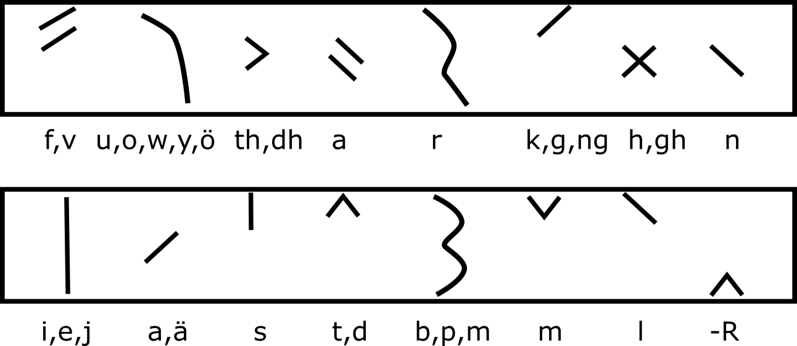

Senast ändrad den 6 augusti 2022.
Du är välkomen att hjälpa till med redigering och utveckling av denna skrift. Var vänlig kontakta: martin snabel-a wiss punkt se, om du vill hjälpa till, eller om du har synpunkter på innehållet, eller rättelser.
Synpunkter som inkommer före den 1 januari 2023, kommer att komma med i version 2 av detta dokument.
Om du vill redigera texten på egen hand direkt på GitHub så är adressen: https://github.com/marwiss/elfdalian_text.
Text är en viktig del av varje språk. Text är inte bara ett annat sätt att förmedla det som annars skulle ha sagts, utan gör det även möjligt att förmedla sådana budskap som annars inte alls skulle varit möjliga att säga. Försök exempelvis att säga det som står i vilken bok som helst, men utan att använda text. Text möjliggör en större detaljrikedom samt längre och mer komplicerade berättelser och budskap. Dessa berättelser och budskap kan dessutom bevaras under en längre tid, utan att någon själv behöver minnas eller återge det ihågkommna. Med text kan den språkliga gemenskapen behålla en större mängd kunskap och minnen än vad som annars vore möjligt.
Text har huggits i sten, ristats i trä, skrivits på papper och tryckts i böcker. Älvdalska har skrivits med dalrunor och med landsmålsalfabet, och skrivs sedan nittiotalet vanligtvis med ett alfabet som liknar det svenska latinska alfabetet, men som har vissa kompletterande specialtecken, och där bokstäverna delvis ibland även har något annorlunda ljud, jämfört med hur samma bokstav låter i det svenska språket.
Nuförtiden skrivs text vanligtvis med hjälp av tangentbord eller knappsats, lagras digitalt, skickas digitalt, och läses på någon form av skärm på mobilen, bildskärmen eller läsplattan. För att det älvdalska språket ska hänga med i utvecklingen och vara användbart, behöver det vara lätt att använda älvdalsk text digitalt. Det behövs knappsatser för mobiler och tangentbordslayouter för den som vill skriva med datorn. Det behövs standarder för hur älvdalsk text ska sparas och sorteras i digitala dokument och databaser, och det behövs älvdalska typsnitt.
När nya ord skapas behöver det vara tydligt hur de lämpligen stavas. Det får också gärna vara lätt att förstå hur ett nypåkommet älvdalsk ord låter. För dessa ändamål behövs en rättstavning.
Denna skrift syftar till att dokumentera några erfarenheter från arbetet med att publicera en digital och sökbar älvdalsk ordbok på nätet. Dessa erfarenheter presenteras tillsammans med en sammanställning av information från andra befintliga källor, som kan vara bra att ha i detta sammanhang.
Syftet är att hjälpa den som vill hantera älvdalsk digital text på olika sätt i framtiden, genom att hålla information av intresse för älvdalsk digital text samlad i ett dokument.
För att belysa skillnader mellan älvdalsk och svensk text, finns också fonetisk information, samt ibland motsvarande information om svensk text. För att belysa bakgrunden till varje enskild dalrunas utformning och ljudvärde, finns även information om runor som använts historiskt.All information i denna text är möjligt att redigera med versionshantering på github.
Alfabet
En uppsättning tecken som sorteras i alfabetisk ordning.
Alfabetisk ordning
En sorteringsordning, där bl.a. de första två tecknen
vanligtvis kan motsvara ett uttal som liknar uttalet för grekiskans två tecken alfa och beta.
Bokstav
Ett tecken som ingår i ett alfabet.
Dalruna
En runa som ingår i ett dalrunealfabet.
Dalrunealfabet
En teckenuppsättning dalrunor som sorteras i alfabetisk ordning.
Futhark
En teckenuppsättning som sorteras i futharkisk ordning.
Futharkisk ordning
En sorteringsordning, där de två första tecknen
vanligtvis kan motsvara ett uttal som liknar uttalet för de initiala ljuden i urnordiskans motsvarigheter till orden
fä (boskap) och ur (i betydelsen uroxe).
Landsmålsalfabetet
Landsmålsalfabetet skapades i slutet av 1800-talet av
Johan August Lundell och har använts som en fonetisk skrift för att återge svenskt dialektuttal.
Runa
Ett tecken som har sitt ursprung från (eller som används tillsammans med andra
tecken som har sitt ursprung från) den urnordiska futharken.
Sorteringsordning
Regler som för varje tecken i en teckenuppsättning, anger
om tecknet kommer före eller efter de andra tecknen i teckenuppsättningen.
Tangentbord
Ett fysiskt eller digitalt verktyg som har en uppsättning tangenter
som används för att skriva tecken.
Tangentbordsplacering
Regler som styr vilka tecken som skrivs med vilka
tangenter på ett tangentbord.
Tecken
Ett abstrakt tecken. Kan vara bland annat en bokstav eller en runa.
Teckenbild
En specifik grafisk form som förknippas med ett abstrakt tecken (som kan
representeras med många olika varianter i form av olika teckenbilder).
Teckenkod
Ett sätt att representera en teckenuppsättning med koder (som vanligtvis
utgörs av unika tal).
Teckenuppsättning
Den uppsättning tecken som ingår i ett typsnitt.
Typsnitt
En teckenuppsättning med karaktäristiska teckenbilder.
Unicode
En universell teckenkod som innehåller de flesta teckenuppsättningarna för de
flesta språken i världen.
Uttal
Ett eller flera av de ljud som ett tecken kan motsvara.
När man ska lära sig ett nytt alfabet, eller ett nytt språk, så vill man ju gärna veta hur bokstäverna och orden uttalas. Tyvärr är det ofta inte alltid enkelt. Ett och samma ljud kan stavas på flera olika sätt. En och samma bokstav kan få flera olika ljud i olika ord eller i olika kombinationer med andra bokstäver. Bokstaven C kan exempelvis uttalas både som ett S och som ett K. En viss bokstav i det svenska språket har inte nödvändigtvis exakt samma ljud i det älvdalska språket. För att skapa ordning i denna oreda, för att förstå hur bokstäver och ord verkligen låter mer exakt, behövs därför fonetiska alfabet, som på ett mer enhetligt, detaljerat och konsekvent sätt, kan beskriva hur ord och bokstäver låter.
När det gäller älvdalskan, så har det inom ramen för kursverksamhet, utvecklats en egen älvdalsk rättstavning, som använder svenska latinska bokstäver och till denna rättstavning har även tagits fram en fonetisk rättstavning för att beskriva hur de älvdalska bokstäverna och orden låter. Denna fonetiska rättstavning används dock inte för att beskriva hur svenska ord och bokstäver låter, och används inte heller för att beskriva några andra språk eller dialekter. Detta gör det svårt att jämföra fonetiska beskrivningar av älvdalska ords och bokstävers uttal, med beskrivningar av motsvarande svenska ords och bokstävers uttal.
En lösning på detta problem är att översätta alla fonetiska beskrivningar av uttal till ett och samma fonetiska alfabet. För just detta ändamål har ett internationellt fonetiskt alfabet utvecklats. Och av den anledningen finns i detta dokument en beskvining av det internationella fonetiska alfabetet IFA), samt översättningsnycklar mellan Ulum dalskas fonetiska rättstavning till IFA.
När älvdalska började dokumenteras i slutet av 1800-talet och i början av 1900-talet fanns ett särskilt svenskt fonetiskt alfabet. Detta svenska fonetiska alfabet kallades för landsmålsalfabetet och används för att dokumentera både svenska dialekter och andra språk. En hel del älvdalska ord och meningar har dokumenterats med hjälp av landsmålsalfabetet. För att kunna jämföra dessa ord med ulum dalskas fonetiska rättstavning behövs översättningsnycklar mellan landsmålsalfabetet och IFA. Därför inkluderas i detta dokument även en översättningsnycket från landsmålsalfabetet till IFA, samt en översättningsnyckel från Ulum Dalskas fonetiska rättstavning till IFA. De specialtecken som används i det älvdalska latinska alfabetet har sitt ursprung från det svenska fonetiska landsmålsalfabetet.
För de flesta tecken finns möjlighet att lyssna på uttalet på hemsidan som öppnas när man klickar på de tecken som även är länkar. Eftersom det är ett internationellt fonetiskt alfabet översättning av engelska begrepp inte ansetts vara nödvändigt.
| Bilabial | Labiodental | Dental | Alveolar | Postalveolar | Retroflex | Labialized palatal | Postalveolar-velar | Alveolo-palatal | Palatal | Labial-velar | Velar | Uvular | Pharyngeal | Epiglottal | Glottal | |||||||||||||||||
|---|---|---|---|---|---|---|---|---|---|---|---|---|---|---|---|---|---|---|---|---|---|---|---|---|---|---|---|---|---|---|---|---|
| Plosive | p | b | p̪ | b̪ | t̪ | d̪ | t | d | ʈ | ɖ | ȶ | ȡ | c | ɟ | k͡p | ɡ͡b | k | ɡ | q | ɢ | ʡ | ʔ | ||||||||||
| Implosive | ɓ̥ | ɓ | ɗ̪ | ɗ | * | ʄ | ɠ | ʛ | ||||||||||||||||||||||||
| Ejective | pʼ | t̪ʼ | tʼ | ʈʼ | cʼ | kʼ | qʼ | |||||||||||||||||||||||||
| Nasal | m̥ | m | ɱ̊ | ɱ | n̪̊ | n̪ | n̥ | n | ɳ̊ | ɳ | ȵ | ɲ | ŋ͡m | ŋ | ɴ | |||||||||||||||||
| Trill | ʙ | r̥ | r | * | ʀ | * | ||||||||||||||||||||||||||
| Tap or Flap | ⱱ̟ | ⱱ | ɾ | ɽ | * | |||||||||||||||||||||||||||
| Lateral flap | ɺ | * | * | * | ||||||||||||||||||||||||||||
| Fricative | ɸ | β | f | v | θ | ð | s | z | ʃ | ʒ | ʂ | ʐ | ɧ | ɕ | ʑ | ç | ʝ | x | ɣ | χ | ʁ | ħ | ʕ | ʜ | ʢ | h | ɦ | |||||
| Lateral fricative | ɬ | ɮ | ꞎ | |||||||||||||||||||||||||||||
| Ejective fricative | sʼ | ʃʼ | ||||||||||||||||||||||||||||||
| Ejective lateral fricative | ɬʼ | |||||||||||||||||||||||||||||||
| Approximant | β̞̊ | β̞ | ʋ̥ | ʋ | ð̞ | ɹ̥ | ɹ | ɻ̊ | ɻ | ɥ̊ | ɥ | j | ʍ | w | ɰ | |||||||||||||||||
| Lateral approximant | l̥ | l | ɭ | ȴ | ʎ | ʟ | ||||||||||||||||||||||||||
| Front | Central | Back | |||||||||||||
|---|---|---|---|---|---|---|---|---|---|---|---|---|---|---|---|
| Close | i • y | ɨ • ʉ | ɯ • u | ||||||||||||
| Near-close | ɪ • ʏ | ɪ̈ • ʊ̈ | • ʊ | ||||||||||||
| Close-mid | e • ø | ɘ • ɵ | ɤ • o | ||||||||||||
| Mid | e̞ • ø̞ | ə | ɤ̞ • o̞ | ||||||||||||
| Open-mid | ɛ • œ | ɜ • ɞ | ʌ • ɔ | ||||||||||||
| Near-open | æ • | ɐ | |||||||||||||
| Open | a • ɶ | ä • | ɑ • ɒ |
| Voiceless | Breathy Voiced | Dental | Syllabic |
|---|---|---|---|
| ˳ • ◌̥ | ◌̤ | ◌͏̪ | ˌ • ◌̩ |
| Voiced | Creaky Voiced | Apical | Non-syllabic |
| ˬ • ◌̬ | ˷ • ◌̰ | ˽ • ◌̺ | ◌͏̯ |
| Aspirated | Linguolabial | Laminal | More Rounded |
| ʰ | ◌͏̼ | ◌͏̻ | ˒ • ◌̹ |
| Labialized | Nasalized | Palatalized | Less Rounded |
| ʷ | ◌̃ | ʲ | ˓ • ◌̜ |
| Advanced | Nasal release | Centralized | Velarized |
| ˖ • ◌̟ | ⁿ | ¨ • ◌̈ | ˠ |
| Retracted | Lateral release | Mid-Centralized | Pharyngealized |
| ˍ • ◌̠ | ˡ | ˟ • ◌̽ | ˤ |
| Advanced Tongue Root | No audible release | Raised | Velarized or Pharyngealized |
| ◌͏̘ | ˺ • ◌̚ | ˔ • ◌̝ | ◌̴ |
| Retracted Tongue Root | Rhoticity | Lowered | Lengthened |
| ◌͏̙ | ˞ | ˕ • ◌̞ | ː |
Nedan visas bokstäverna i det fonetiska landsmålsalfabetet (LMA) och hur de representeras med detaljerad IFA samt förenklad IFA. Landsmålsalfabetet finns inte i med Unicode. För att använda landsmålsalfabetets tecken, krävs därför att ett särskilt typsnitt installeras och används.
Typsnittet finns att hämta här: https://cercurius.se/typografi/dialekt.php
| LMA | Unicode | IFA | Unicode | IFA | Unicode | ||
|---|---|---|---|---|---|---|---|
| a | U+0251 | a | U+0061 U+E05A | a | U+0061 | ||
| ɒ | U+0252 | ɐ | U+0250 | ɐ | U+0250 | ||
| | U+E100 | ɑ | U+0251 U+E079 U+E099 | ɑ | U+0251 | ||
| | U+E101 | o | U+006F | o | U+006F | ||
| | U+E102 | ɑ | U+0251 U+E05E | ɒ | U+0252 | ||
| | U+E103 | ɑ | U+0251 U+E07B U+E09B U+E0BE | ɑ | U+0251 | ||
| | U+E104 | ɑ | U+0251 | ɑ | U+0251 | ||
| | U+E105 | æ | U+00E6 | æ | U+00E6 | ||
| | U+E106 | a | U+0061 | a | U+0061 | ||
| æ | U+E107 | ε | U+025B U+E05B | ε | U+025B | ||
| | U+E108 | ε | U+025B U+E05A | ε | U+025B | ||
| | U+E109 | ε | U+025B U+E07A U+E09B | ε | U+025B | ||
| | U+E10A | ε̞ | U+025B U+E05C | ε | U+025B | ||
| | U+E10B | ε | U+025B U+E07A U+E09C | ε | U+025B | ||
| | U+E10C | æ | U+00E6 U+E07B | æ | U+00E6 | ||
| | U+E10D | ε | U+025B U+E07B U+E09B | ε | U+025B | ||
| | U+E10E | ɒ | U+0252 | ɒ | U+0252 | ||
| b | U+0062 | b | U+0062 | b | U+0062 | ||
| | U+E110 | b̥ | U+0062 U+E050 | b | U+0062 | ||
| | U+E111 | β | U+03B2 | β | U+03B2 | ||
| ɔ | U+0254 | ʰ | U+02B0 | ʰ | U+02B0 | ||
| d | U+0064 | d̪ | U+0064 U+E05F | d | U+0064 | ||
| | U+E11B | d | U+0064 | d | U+0064 | ||
| | U+E112 | d | U+0064 U+E05F U+E0B0 | d | U+0064 | ||
| | U+E11C | d̥ | U+0064 U+E050 | d | U+0064 | ||
| ɖ | U+0256 | ɖ | U+0256 U+E0B9 | ɖ | U+0256 | ||
| | U+E113 | ɖ | U+0256 U+E0D9 U+E0F0 | ɖ | U+0256 | ||
| | U+E114 | ɖ | U+0256 | ɖ | U+0256 | ||
| | U+E115 | ɖ | U+0256 U+E0B0 | ɖ | U+0256 | ||
| | U+E116 | ɟ | U+025F | ɟ | U+025F | ||
| | U+E117 | ɟ | U+025F U+E0F0 | ɟ | U+025F | ||
| | U+E118 | ɟ | U+025F U+E0FA | ɟ | U+025F | ||
| | U+E119 | ð | U+00F0 | ð | U+00F0 | ||
| e | U+0065 | e | U+0065 U+E05B | e | U+0065 | ||
| ə | U+0259 | ə | U+0259 | ə | U+0259 | ||
| | U+E120 | e̞ | U+0065 U+E05C | e̞ | U+0065 U+E05C | ||
| | U+E121 | ε | U+025B U+E07B U+E09B U+E0BA | ε | U+025B | ||
| | U+E122 | i | U+0069 U+E09B | i | U+0069 | ||
| ɛ | U+025B | ε | U+025B U+E07A U+E09B | ε | U+025B | ||
| f | U+0066 | f | U+0066 | f | U+0066 | ||
| | U+E123 | ɸ | U+0278 | ɸ | U+0278 | ||
| | U+E124 | ɡ | U+0261 | ɡ | U+0261 | ||
| | U+E124 U+E04B | ɡ | U+0261 U+E0B0 | ɡ | U+0261 | ||
| g | U+0261 | ɡ | U+0261 U+E0B9 | ɡ | U+0261 | ||
| g | U+0261 U+E04B | ɡ | U+0261 U+E0D9 U+E0F0 | ɡ | U+0261 | ||
| | U+E125 | ɣ | U+0263 U+E0B9 | ɣ | U+0263 | ||
| | U+E125 U+E04B | ɣ | U+0263 U+E0D9 U+E0F0 | ɣ | U+0263 | ||
| | U+E126 | ɣ | U+0263 | ɣ | U+0263 | ||
| | U+E126 U+E04B | ɣ | U+0263 U+E0B0 | ɣ | U+0263 | ||
| h | U+0068 | h | U+0068 | h | U+0068 | ||
| ƕ | U+0195 | ʍ | U+028D | ʍ | U+028D | ||
| ı | U+0131 | i | U+0069 | i | U+0069 | ||
| | U+E128 | ɪ | U+026A | ɪ | U+026A | ||
| | U+E129 | ɪ | U+026A U+E09A U+0020 U+E09C | ɪ | U+026A | ||
| | U+E12A | ɨ | U+0268 U+E09B | ɨ | U+0268 | ||
| | U+E12B | ʝ | U+029D | ʝ | U+029D | ||
| k | U+006B | kʰ | U+006B U+02B0 | k | U+006B | ||
| | U+E12C | kʰ | U+006B U+E059 U+02B0 | k | U+006B | ||
| l | U+006C | l | U+006C U+E09F | l | U+006C | ||
| | U+E137 | l | U+006C | l | U+006C | ||
| ł | U+0142 | ɫ | U+026B | l | U+006C | ||
| ɭ | U+026D | ɭ | U+026D U+E0F9 | ɭ | U+026D | ||
| | U+E130 | ɭ | U+026D | ɭ | U+026D | ||
| | U+E131 | ɽ | U+027D | ɽ | U+027D | ||
| | U+E132 | ʎ | U+028E | ʎ | U+028E | ||
| | U+E133 | ɬ | U+026C | ɬ | U+026C | ||
| | U+E134 | ɭ | U+026D U+E0F0 | ɭ | U+026D | ||
| | U+E135 | ɽ | U+027D U+E0B0 | ɽ | U+027D | ||
| m | U+006D | m | U+006D | m | U+006D | ||
| | U+E13A | m | U+006D U+E070 | m | U+006D | ||
| | U+E13B | ɱ | U+0271 | ɱ | U+0271 | ||
| | U+E13C | ɱ | U+0271 U+E070 | ɱ | U+0271 | ||
| n | U+006E | n̪ | U+006E U+E05F | n | U+006E | ||
| | U+E14D | n | U+006E | n | U+006E | ||
| | U+E140 | n | U+006E U+E05F U+E0B0 | n | U+006E | ||
| | U+E14E | n | U+006E U+E050 | n | U+006E | ||
| ɳ | U+0273 | ɳ | U+0273 U+E0B9 | ɳ | U+0273 | ||
| | U+E141 | ɳ | U+0273 U+E0D9 U+E0F0 | ɳ | U+0273 | ||
| | U+E142 | ɳ | U+0273 | ɳ | U+0273 | ||
| | U+E143 | ɳ | U+0273 U+E0B0 | ɳ | U+0273 | ||
| | U+E144 | ɲ | U+0272 | ɲ | U+0272 | ||
| | U+E145 | ɲ | U+0272 U+E0B0 | ɲ | U+0272 | ||
| | U+E146 | ŋ | U+014B | ŋ | U+014B | ||
| | U+E147 | ŋ | U+014B U+E0B0 | ŋ | U+014B | ||
| ŋ | U+014B | ŋ | U+014B U+E0B9 | ŋ | U+014B | ||
| | U+E148 | ŋ | U+014B U+E0D9 U+E0F0 | ŋ | U+014B | ||
| o | U+006F | ɔ | U+0254 | ɔ | U+0254 | ||
| ɵ | U+0275 | ɵ | U+0275 U+E07C U+E09D | ɵ | U+0275 | ||
| ø | U+00F8 | ø | U+00F8 U+E05B | ø | U+00F8 | ||
| | U+E150 | ø̞ | U+00F8 U+E05C | ø | U+00F8 | ||
| | U+E151 | œ | U+0153 U+E07B | œ | U+0153 | ||
| ɷ | U+0277 | u | U+0075 U+E05E | u | U+0075 | ||
| | U+E152 | o | U+006F U+E05B | o | U+006F | ||
| | U+E153 | œ | U+0153 U+E07C U+E09C U+E0DE | œ | U+0153 | ||
| | U+E154 | e̜ | U+0065 U+E05D | e | U+0065 | ||
| | U+E155 | œ | U+0153 U+E07C U+E09C | œ | U+0153 | ||
| | U+E156 | œ | U+0153 U+E07E | œ | U+0153 | ||
| p | U+0070 | pʰ | U+0070 U+02B0 | p | U+0070 | ||
| r | U+0072 | r | U+0072 | r | U+0072 | ||
| | U+E160 | r̥ | U+0072 U+E050 | r | U+0072 | ||
| | U+E161 | ɹ | U+0279 | r | U+0072 | ||
| | U+E162 | ɹ̥ | U+0279 U+E050 | r | U+0072 | ||
| | U+E163 | ɾ | U+027E U+E07A U+E09A | r | U+0072 | ||
| | U+E164 | ɾ | U+027E U+E07A U+E09A U+E0B0 | r | U+0072 | ||
| | U+E165 | ʐ | U+0290 | ʐ | U+0290 | ||
| | U+E166 | ʂ | U+0282 | ʂ | U+0282 | ||
| | U+E167 | ʁ | U+0281 | ʁ | U+0281 | ||
| | U+E168 | χ | U+03C7 | χ | U+03C7 | ||
| ʀ | U+0280 | ʀ | U+0280 | ʀ | U+0280 | ||
| | U+E169 | ʀ̥ | U+0280 U+E050 | ʀ | U+0280 | ||
| ρ | U+E16A | r̟ | U+0072 U+E059 | r | U+0072 | ||
| s | U+0073 | s̻ | U+0073 U+033B | s | U+0073 | ||
| | U+E177 | s | U+0073 | s | U+0073 | ||
| ʂ | U+0282 | ʂ | U+0282 U+E0B9 | ʂ | U+0282 | ||
| | U+E170 | ʂ | U+0282 | ʂ | U+0282 | ||
| | U+E171 | ɕ | U+0255 | ɕ | U+0255 | ||
| | U+E172 | ɕ | U+0255 U+E05A | ɕ | U+0255 | ||
| s | U+0283 | ʃ | U+0283 | ʃ | U+0283 | ||
| | U+E173 | ʃʷ | U+0283 U+02B7 | ʃ | U+0283 | ||
| | U+E174 | ɧ | U+0267 | ɧ | U+0267 | ||
| | U+E175 | ʃʋ | U+0283 U+E222 | ʃ | U+0283 | ||
| t | U+0074 | t̪ʰ | U+0074 U+E05F U+02B0 | t | U+0074 | ||
| | U+E17D | tʰ | U+0074 U+02B0 | t | U+0074 | ||
| ʈ | U+0288 | ʈʰ | U+0288 U+E0B9 U+02B0 | ʈ | U+0288 | ||
| | U+E17A | ʈʰ | U+0288 U+02B0 | ʈ | U+0288 | ||
| | U+E17B | cʰ | U+0063 | c | U+0063 | ||
| | U+E17C | c | U+0063 U+E05A | c | U+0063 | ||
| þ | U+00FE | θ | U+03B8 | θ | U+03B8 | ||
| u | U+0075 | u | U+0075 | u | U+0075 | ||
| | U+E180 | ɵ̞ | U+0275 U+E05C | ɵ | U+0275 | ||
| ɯ | U+E184 | ʉ | U+0289 U+E07C U+E09E | ʉ | U+0289 | ||
| | U+E185 | ɵ | U+0275 U+E05E | ɵ | U+0275 | ||
| | U+E182 | ʉ | U+0289 U+E079 U+E099 U+E0BE | ʉ | U+0289 U+E059 | ||
| | U+E183 | ɵ | U+0275 U+E079 U+E09E | ɵ | U+0275 | ||
| v | U+0076 | v | U+0076 | v | U+0076 | ||
| v | U+0076 U+E04B | v | U+0076 U+E050 | v | U+0076 | ||
| w | U+0077 | w | U+0077 | w | U+0077 | ||
| x | U+0078 | x | U+0078 | x | U+0078 | ||
| | U+E186 | ç | U+00E7 | ç | U+00E7 | ||
| y | U+E188 | y | U+0079 U+E0BD | y | U+0079 | ||
| | U+E18E | ʉ | U+0289 U+E07B U+E09D | ʉ | U+0289 U+E07B U+E09D | ||
| | U+E189 | ʏ̞ | U+028F U+E05C | ʏ | U+028F | ||
| | U+E18A | i | U+0069 U+E09E | i | U+0069 | ||
| | U+E18B | ʏ | U+028F U+E05D | ʏ | U+028F | ||
| | U+E18C | y | U+0079 | y | U+0079 | ||
| | U+E18D | ʏ | U+028F | ʏ | U+028F | ||
| z | U+007A | z̻ | U+007A U+033B | z | U+007A | ||
| | U+E190 | ʐ | U+0290 U+E0B9 | ʐ | U+0290 | ||
| | U+0293 | ʑ | U+0291 | ʑ | U+0291 | ||
| ‛ | U+E192 | ʰ | U+02B0 | ʰ | U+02B0 | ||
| ’ | U+E193 | ʔ | U+0294 | ʔ | U+0294 |
Denna stavning finns återgiven i böckerna Älvdalsk grammatik och Övdalsk ordbok, som är tillgängliga från Ulum dalska.
| UD | IFA | Skrivs med | Exempel | Kommentar |
|---|---|---|---|---|
| a | ɐ | A | Ett mellanting av de svenska orden ”glas” och ”glass”. Samma klang både som kort och lång vokal. | |
| a | makk | |||
| ɐː | A | |||
| a | dar | |||
| ą | ɐ̃ | Ą | Samma som ovan fast nasalerat. | |
| ą | ||||
| ɐ̃ː | Ą | |||
| ą | ||||
| aĭ | ɐ͡i | ai | baita | Som ett älvdalskt "a" tillsammans med ett i-liknande j-ljud i samma stavelse, ungefär som i det svenska ordet "majs". |
| au | ɐ͡ɯ | au | maus | Som ett älvdalskt "a" tillsammans med ett älvdalskt "u" i samma stavelse, ungefär som i det svenska ordet "paus". |
| b | b | B | Blot | Samma som i svenska. |
| b | blot | |||
| bb | gubbe | |||
| d | d | D | Däl | Ungefär samma som i svenska. |
| d | däl | |||
| dd | kudd | |||
| dĭ | dj | Di | Diärv | Ett älvddalskt ”d” tillsammans med ett i-liknande j-ljud. Gäller ett fåtal ord, där ”di” i regel står framför betonad vokal. I andra fall gäller uttalet [d] + [i] i egna stavelser. |
| di | diärv | |||
| dź | d͡ʒ | Dj | Djärå | Som ”tj” (se nedan), fast tonande, något påminnande om de engelska namnen ”John”, ”George”. |
| dj | djärå | |||
| ð | ð | Ð | Ett ”mjukt d”, dvs. ett tonande läspljud som i de engelska orden ”they”, ”that”. | |
| ð | baiða | |||
| ’n | .n | ðn | wiðn | Stavelsebildande n, dvs. ”n” uttalas i en egen stavelse. |
| e | ɛ | E | Ett mellanting av de svenska orden ”rev” och ”räv”. | |
| e | wegg | |||
| ɛ: | E | |||
| e | weg | |||
| ę | ɛ̃ | Ę | Samma som ovan fast nasalerat. | |
| ę | tekstę | |||
| ɛ̃: | Ę | |||
| ę | fręsa | |||
| f | f | F | Firi | Samma som i svenska. |
| f | firi | |||
| ff | kaffi | |||
| g | g | G | Gedda | I regel samma som i svenska. |
| g | gedda | |||
| gg | ogga | |||
| h | h | H | Häj | Samma som i svenska, men mycket ovanligt förekommande i älvdalskan. |
| h | häj | |||
| i | i | I | Ungefär samma klang som i det svenska ordet ”sill”. Samma klang både som kort och lång vokal. | |
| i | wiss | |||
| iː | I | |||
| i | wis | |||
| į | ĩ | Į | Samma som ovan fast nasalerat. | |
| į | ||||
| ĩː | Į | |||
| į | ||||
| ie | iɛ̯ | ie | sieg | Som de älvdalska ljuden för "i" och "e" tillsammans i samma stavelse, men med mest betoning på i. |
| ië | i.ɛ | ie | stieð | Som de älvdalska ljuden för "i" och "e" i två olika stavelser. Ganska sällsynt förekommande. |
| ĭuo | i̯ɯʊ̯ | iuo | liuot | Ett i-liknande j-ljud tillsammans med "uo", alltihopa i en och samma stavelse, men med mest betoning på "u". |
| i(ĭ)uo | i.ɯʊ̯ | iuo | idiuot | Älvdalskt "i" efterföljt av "uo" i två olika stavelser. Ganska sällsynt förekommande. Stundom med ett j-ljud mellan "i" och "uo". |
| j | j | G | Ungefär som i svenska. | |
| g | ||||
| J | Jälåk | |||
| j | jälåk | |||
| ĭ | Ofta, i synnerhet efter konsonanter och i ordslut, uttalas "j" som ett "i". | |||
| bjär | ||||
| k | k | K | Kall | Ungefär som i svenska. Observera att ”ck” och ”x” normalt inte används i älvdalskan. |
| k | kall | |||
| kk | akka | |||
| Q | ||||
| q | ||||
| l | l | L | Oftast ett så kallat ”tjockt” l-ljud (dvs. ɽ enligt IFA), men vid dubbelteckning ”ll” dock alltid ”tunt” l-ljud (dvs. l enligt IFA). | |
| l | ||||
| ll | kall | |||
| l | ɽ | L | ||
| l | klukka | |||
| m | m | M | Muna | Samma som i svenska. |
| m | muna | |||
| mm | simma | |||
| n | n | N | Negga | Samma som i svenska. Stundom med en dragning åt ett ”tjockt” n-ljud som i det uppsvenska uttalet av det svenska ordet ”barn”. |
| n | negga | |||
| nn | finna | |||
| ŋ | ŋ | ng | ungen | Samma som i svenska. |
| ŋg | ŋ͡g | ngg | ungg | Samma som ovan, men med ett hörbart g. |
| ŋk | ŋ͡k | nk | baunka | Samma som ovan, men med ett hörbart k. |
| o | ʊ | O | Som ett mellanting av de svenska orden ”stor” och ”står”. | |
| o | skolle | |||
| ʊː | O | |||
| o | stor | |||
| ǫ | ʊ̃ | Ǫ | Samma som ovan fast nasalerat. | |
| ǫ | ||||
| ʊ̃ː | Ǫ | |||
| ǫ | gǫs | |||
| p | p | P | Pain | Ungefär som i svenska. |
| p | pain | |||
| pp | ||||
| r | r | R | Ryöra | Ofta ett så kallat ”rullande tungspets-r”. |
| r | ryöra | |||
| rr | murra | |||
| s | s | C | Ofta ett något ”orent” s-ljud (så som i finskan). | |
| c | ||||
| S | Sykkel | |||
| s | sykkel | |||
| ss | uoss | |||
| Z | ||||
| z | ||||
| sh | ʂ | Sch | Sch | Sje-ljud som förekommer i några få lånord och interjektioner. |
| sch | sch | |||
| sĭ | sj | Sj | Sju | Ett älvdalskt ”s” tillsammans med ett i-liknande j-ljud. |
| sj | sju | |||
| hl | ɺ̥ | Sl | Slaik | Ett tonlöst l-ljud (oftast följt av tonande l). |
| sl | slaik | |||
| ssl | kessler | |||
| t | t | T | Tegga | Ungefär som i svenska. |
| t | tegga | |||
| tt | rett | |||
| tĭ | tj | Ti | Tiokk | Älvdalskt ”t” tillsammans med ett i-liknande j-ljud. Gäller ett fåtal ord, där ”ti” står framför betonad vokal. |
| ti | tiugu | |||
| tś | t͡ɕ | Tj | Tjär | Älvdalskt t tillsamans med ett mer eller mindre s-likt tje-ljud. |
| tj | tyttja | |||
| u | ɯ | U | Uttalas oftast som ett så kallat ”bergslags-u”, dvs. som ett mellanting av de svenska orden ”bud” och ”bod”. | |
| u | ludda | |||
| ɯː | U | |||
| u | bru | |||
| ų | ɯ̃ | U | Samma som ovan fast nasalerat. | |
| u | ||||
| ɯ̃ː | U | |||
| u | ||||
| uo | ɯʊ | Uo | Uttalet varierar mycket mellan byarna. Öster om älven oftast älvdalskt ”u” tillsammans med ett diffust ä-, e- eller ö-ljud. Väster om älven oftast älvdalskt ”o” tillsammans med ett diffust e-, u-, å- eller ö-ljud. | |
| uo | guott | |||
| ɯʊː | Uo | |||
| uo | guoð | |||
| v | v | V | Samma som i svenska. | |
| v | kåv | |||
| vv | ||||
| w | w | W | Ungefär som i de engelska orden ”white”, ”way”, men i älvdalskan ofta något färgat av vokalen ”u”. | |
| w | wait | |||
| ks | k͡s | X | Används bara i namn och i vissa specialfall. | |
| x | ||||
| y | y | Y | Ungefär som i svenska, men stundom något närmande sig vokalen ”ö”. | |
| y | bytta | |||
| y: | Y | |||
| y | byta | |||
| y̨ | y̨ | Y̨ | Samma som ovan fast nasalerat. | |
| y̨ | ||||
| y̨: | Y̨ | |||
| y̨ | ||||
| yö | yɶ̯ | yö | Som ett älvdalskt ”y” tillsamans med ett mellanting av ”ö” och ”ä” eller ”e” i en och samma stavelse, men med mest betoning på ”y” | |
| å | o | Å | Ungefär som i det svenska ordet ”åtta”, både som lång och kort vokal. | |
| å | åtta | |||
| o: | Å | |||
| å | låta | |||
| ą̊ | õ | Ą̊ | Samma som ovan fast nasalerat. | |
| ą̊ | ||||
| Ǫ | ||||
| ǫ | ||||
| õ: | Ą̊ | |||
| ą̊ | ||||
| Ǫ | ||||
| ǫ | ||||
| åĭ | o͡j | åy | Som älvdalskans ”å” tillsammans med ett mer eller mindre y-färgat ”i” eller ”j” i en och samma stavelse. Ungefär som i det engelska ordet ”boy”. | |
| kåyta | ||||
| ä | æ | Ä | Ungefär som i de svenska orden ”lär” eller ”läs”. | |
| ä | ||||
| æ: | Ä | Ära | ||
| ä | ära | |||
| ö | ɶ | Ö | Ungefär som i de svenska orden ”hör” eller ”höst”. | |
| ö | ||||
| ɶ: | Ö | Öve | ||
| ö | öve |
För att kunna jämföra ljudvärdena för bokstäverna i det äldalska latinska alfabetet, med ljudvärdena för bokstäverna i det svenska latinska alfabetet, följer här en beskrivning av bokstäverna i det svenska latinska alfabetet, och deras ljudvärden.
A B C D E F G H I J K L M N O P Q R S T U V W X Y Z Å Ä Ö
a b c d e f g h i j k l m n o p q r s t u v w x y z å ä ö
| Namn | Tecken | Unicode | Tecken | Unicode | IFA | Exempel | |||
|---|---|---|---|---|---|---|---|---|---|
| a | A | U+0041 | a | U+0061 | a | vass | |||
| ɑː | ras | ||||||||
| be | B | U+0042 | b | U+0062 | b | bibba | |||
| se | C | U+0043 | c | U+0063 | s | susa | |||
| k | Colombia | ||||||||
| de | D | U+0044 | d | U+0064 | d | dadda | |||
| e | E | U+0045 | e | U+0065 | e | fett | |||
| eː | hes | ||||||||
| ɘ | pojke | ||||||||
| eff | F | U+0046 | f | U+0066 | f | fiffig | |||
| ge | G | U+0047 | g | U+0067 | g | gagga | |||
| j | general | ||||||||
| ɧ | generad | ||||||||
| ʂ | generad | ||||||||
| hå | H | U+0048 | h | U+0068 | h | hy | |||
| i | I | U+0049 | i | U+0069 | ɪ | viss | |||
| iː | vis | ||||||||
| ji | J | U+004A | j | U+006A | j | jojo | |||
| ɧ | jalusi | ||||||||
| ʂ | jalusi | ||||||||
| kå | K | U+004B | k | U+006B | k | kaka | |||
| ell | L | U+004C | l | U+006C | l | lilla | |||
| ɭ | ärla | ||||||||
| emm | M | U+004D | m | U+006D | m | mamma | |||
| enn | N | U+004E | n | U+006E | n | nynna | |||
| ɳ | orne | ||||||||
| ŋ | bank | ||||||||
| o | O | U+004F | o | U+006F | ʊ | ost | |||
| uː | mos | ||||||||
| ɔ | oss | ||||||||
| pe | P | U+0050 | p | U+0070 | p | pappa | |||
| ku | Q | U+0051 | q | U+0071 | k | kaka | |||
| err | R | U+0052 | r | U+0072 | r | rara | |||
| ess | S | U+0053 | s | U+0073 | s | susa | |||
| te | T | U+0054 | t | U+0074 | t | titta | |||
| u | U | U+0055 | u | U+0075 | ɵ | buss | |||
| ʉː | lus | ||||||||
| enkel ve | V | U+0056 | v | U+0076 | v | vovve | |||
| dubbel ve | W | U+0057 | w | U+0077 | v | William | |||
| ecks | X | U+0058 | x | U+0078 | k͡s | xylofon | |||
| y | Y | U+0059 | y | U+0079 | y | hyss | |||
| yː | lys | ||||||||
| säta | Z | U+005A | z | U+007A | s | susa | |||
| å | Å | U+00C5 | å | U+00E5 | oː | lås | |||
| ä | Ä | U+00C4 | ä | U+00E4 | ɛ | mätt | |||
| ɛː | läs | ||||||||
| æ | märr | ||||||||
| æː | lär | ||||||||
| ö | Ö | U+00D6 | ö | U+00F6 | œ | löss | |||
| øː | lös | ||||||||
| ɶ | dörr | ||||||||
| ɶː | hör |
Bokstäverna Å Ä Ö å ä ö kan skrivas på mer än ett sätt med Unicode. För att texter ska kunna jämföras med varandra är det lämpligt att konsekvent skriva dessa bokstäver på ett och samma sätt. Vanligtvis används normaliseringsformat C (NFC) av Unicode. Det är därför som NFC används här (förutom vad gäller bokstäverna Ą̊ och ą̊ i det älvdalska alfabetet).
a ɑː b d ɖ e ɘ eː f g h ɪ iː j k l ɭ m n ɳ ŋ ʊ uː p r s ʂ ɧ t ɵ ʉː ɕ ʈ v y yː ɔ oː ɛ ɛː æ æː œ øː ɶ ɶː
| IFA | Kan skrivas | Exempel |
|---|---|---|
| a | A | Ask (låda) |
| a | vass | |
| ɑː | A | Avlång |
| a | ras | |
| b | B | Bibba |
| b | bibba | |
| bb | bibba | |
| d | D | Dadda |
| d | dadda | |
| dd | dadda | |
| ɖ | rd | gardin |
| e | E | Ett |
| e | fett | |
| eː | E | Evighet |
| e | hes | |
| ɘ | e | pojke |
| f | F | Fiffig |
| f | fiffig | |
| ff | fiffig | |
| g | G | Gagga |
| g | gagga | |
| gg | gagga | |
| h | H | Hy |
| h | hy | |
| ɪ | I | viss |
| i | icke | |
| iː | I | vis |
| i | Is | |
| j | J | Jojo |
| j | jojo | |
| G | Genast | |
| g | genast | |
| Lj | Ljus | |
| lj | ljus | |
| k | K | Kaka |
| k | kaka | |
| ck | ficka | |
| l | L | Lilla |
| l | lilla | |
| ll | lilla | |
| ɭ | rl | ärla |
| m | M | Mamma |
| m | mamma | |
| mm | mamma | |
| n | N | Nynna |
| n | nynna | |
| nn | nynna | |
| ɳ | rn | orne |
| ŋ | ng | ånga |
| ʊ | O | Ost |
| o | ost | |
| uː | O | Osa |
| o | mos | |
| p | P | Pappa |
| p | pappa | |
| pp | pappa | |
| r | R | Rara |
| r | rara | |
| rr | irra | |
| s | S | Sussa |
| s | sussa | |
| ss | sussa | |
| ʂ | G | Generad |
| g | generad | |
| J | Jalusi | |
| j | jalusi | |
| Ch | Choklad | |
| ch | choklad | |
| rs | fors | |
| sc | fascinerande | |
| Sh | Shah | |
| sh | shah | |
| si | version | |
| Sj | Sjuk | |
| sj | sjuk | |
| Sk | Sked | |
| sk | sked | |
| ti | situation | |
| xi | reflexion | |
| Sch | Schack | |
| sch | schack | |
| ssi | fission | |
| ɧ | G | Generad |
| g | generad | |
| J | Jalusi | |
| j | jalusi | |
| Ch | Chockad | |
| ch | Chockad | |
| sc | fascinerad | |
| Sj | Sjuk | |
| sj | sjuk | |
| Sk | Sked | |
| sk | sked | |
| ti | situation | |
| xi | reflexion | |
| Sch | Schack | |
| Skj | Skjuta | |
| skj | skjuta | |
| Stj | Stjärna | |
| stj | stjärna | |
| t | T | Titta |
| t | titta | |
| tt | titta | |
| ɵ | U | Uppe |
| u | buss | |
| ʉː | U | Usling |
| u | lus | |
| ɕ | Tj | Tjänare |
| tj | tjänare | |
| K | Kedja | |
| k | kedja | |
| Kj | Kjol | |
| kj | kjol | |
| c | ttj | lättja |
| ʈ | rt | ärta |
| v | V | Vovve |
| v | vovve | |
| vv | vovve | |
| W | William | |
| w | Ewa | |
| y | Y | Ypperlig |
| y | hyss | |
| yː | Y | Yvig |
| y | lys | |
| ɔ | O | Oss |
| o | oss | |
| Å | Åska | |
| å | åska | |
| oː | O | Orakel |
| o | Kol | |
| Å | Åsa | |
| å | lås | |
| ɛ | Ä | Ätt |
| ä | mätt | |
| ɛː | Ä | Äng |
| ä | läs | |
| æ | Ä | Ärr |
| ä | ärr | |
| æː | Ä | Är |
| ä | är | |
| œ | Ö | Östen |
| ö | löss | |
| øː | Ö | Ösa |
| ö | lös | |
| ɶ | Ö | Öppen |
| ö | dörr | |
| ɶː | Ö | Öring |
| ö | hör |
| Nummer | Bokstäver | |||
|---|---|---|---|---|
| 1 | A U+0041 | a U+0061 | ||
| 2 | B U+0042 | b U+0062 | ||
| 3 | C U+0043 | c U+0063 | ||
| 4 | D U+0044 | d U+0064 | ||
| 5 | E U+0045 | e U+0065 | ||
| 6 | F U+0046 | f U+0066 | ||
| 7 | G U+0047 | g U+0067 | ||
| 8 | H U+0042 | h U+0068 | ||
| 9 | I U+0049 | i U+0069 | ||
| 10 | J U+004A | j U+006A | ||
| 11 | K U+004B | k U+006B | ||
| 12 | L U+004C | l U+006C | ||
| 13 | M U+004D | m U+006D | ||
| 14 | N U+004E | n U+006E | ||
| 15 | O U+004F | o U+006F | ||
| 16 | P U+0050 | p U+0070 | ||
| 17 | Q U+0051 | q U+0071 | ||
| 18 | R U+0052 | r U+0072 | ||
| 19 | S U+0053 | s U+0073 | ||
| 20 | T U+0054 | t U+0074 | ||
| 21 | U U+0055 | u U+0075 | ||
| 22 | V U+0056 | v U+0076 | W U+0057 | w U+0077 |
| 23 | X U+0058 | x U+0078 | ||
| 24 | Y U+0059 | y U+0079 | ||
Dubbel ve kan ibland sorteras för sig, efter enkel ve, men oftast sorteras dubbel ve tillsammans med enkel ve för att underlätta sökning på namn, eftersom det svenska uttalet som regel inte skiljer sig åt för enkel ve och dubbel ve. Om ett ord skiljs åt enbart genom bokstäverna enkelt ve och dubbel ve, så bör ordet som innehåller enkel ve sorteras före ordet som innehåller dubbel ve. Därför står dubbel ve till höger om enkel ve i ovanstående tabell.
Utan shift.
Med shift.
A Ą B C D Đ E Ę F G H I Į J K L M N O Ǫ P Q R S T U Ų V W X Y Y̨ Z Å Ą̊ Ä Ö
a ą b c d đ e ę f g h i į j k l m n o ǫ p q r s t u ų v w x y y̨ z å ą̊ ä ö
| Namn | Tecken | Unicode | Tecken | Unicode | IFA | UD | Exempel | |||
|---|---|---|---|---|---|---|---|---|---|---|
| a | A | U+0041 | a | U+0061 | ɐ | a | makk | |||
| ɐː | a | dar | ||||||||
| ą | Ą | U+0104 | ą | U+0105 | ɐ̃ː | ą | ||||
| ɐ̃ | ą | |||||||||
| be | B | U+0042 | b | U+0062 | b | b | blot | |||
| se | C | U+0043 | c | U+0063 | s | s | ||||
| de | D | U+0044 | d | U+0064 | d | d | däl | |||
| eđ | Đ | U+0110 | đ | U+0111 | ð | ð | baiða | |||
| e | E | U+0045 | e | U+0065 | ɛ | e | wegg | |||
| ɛː | e | weg | ||||||||
| ę | Ę | U+0118 | ę | U+0119 | ɛ̃ | ę | ||||
| ę | ɛ̃ː | ę | ||||||||
| eff | F | U+0046 | f | U+0066 | f | f | firi | |||
| ge | G | U+0047 | g | U+0067 | g | g | gedda | |||
| j | g | maiga | ||||||||
| hå | H | U+0048 | h | U+0068 | h | h | häj | |||
| i | I | U+0049 | i | U+0069 | i | i | wiss | |||
| iː | i | wis | ||||||||
| į | Į | U+012E | į | U+012F | ĩ | į | ||||
| ĩː | į | |||||||||
| ji | J | U+004A | j | U+006A | j | ĭ | bjär | |||
| j | j | jälåk | ||||||||
| kå | K | U+004B | k | U+006B | k | k | kall | |||
| ell | L | U+004C | l | U+006C | l | l | kall | |||
| ɽ | l | klukka | ||||||||
| emm | M | U+004D | m | U+006D | m | m | muna | |||
| enn | N | U+004E | n | U+006E | n | n | negga | |||
| o | O | U+004F | o | U+006F | ʊ | o | skolle | |||
| ʊː | o | stor | ||||||||
| ǫ | Ǫ | U+01EA | ǫ | U+01EB | ʊ̃ | ǫ | ||||
| ʊ̃ː | ǫ | gǫs | ||||||||
| õ | ą̊ | |||||||||
| õː | ą̊ | |||||||||
| pe | P | U+0050 | p | U+0070 | p | p | pain | |||
| ku | Q | U+0051 | q | U+0071 | k | k | q | |||
| err | R | U+0052 | r | U+0072 | r | r | ryöra | |||
| ess | S | U+0053 | s | U+0073 | s | s | sykkel | |||
| te | T | U+0054 | t | U+0074 | t | t | tegga | |||
| u | U | U+0055 | u | U+0075 | ɯ | u | ludda | |||
| ɯː | u | bru | ||||||||
| ų | Ų | U+0172 | ų | U+0173 | ɯ̃ | ų | ||||
| ɯ̃ː | ų | |||||||||
| ve | V | U+0056 | v | U+0076 | v | v | kåv | |||
| dubbel ve | W | U+0057 | w | U+0077 | w | w | wait | |||
| ecks | X | U+0058 | x | U+0078 | k͡s | ks | x | |||
| y | Y | U+0059 | y | U+0079 | y | y | bytta | |||
| yː | y | byta | ||||||||
| y̨ | Y̨ | U+0059 U+0328 | y̨ | U+0079 U+0328 | ỹ | y̨ | ||||
| ỹː | y̨ | |||||||||
| säta | Z | U+005A | z | U+007A | s | s | z | |||
| å | Å | U+00C5 | å | U+00E5 | o | å | åtta | |||
| oː | å | låta | ||||||||
| ą̊ | Ą̊ | U+00C5 U+0328 | ą̊ | U+00E5 U+0328 | õ | ą̊ | ||||
| õː | ą̊ | |||||||||
| ä | Ä | U+00C4 | ä | U+00E4 | æ | ä | ära | |||
| æː | ä | |||||||||
| ö | Ö | U+00D6 | ö | U+00F6 | ɶ | ö | ||||
| ɶː | ö | öve |
| IFA | UD | Skrivs med | Exempel | Kommentar |
|---|---|---|---|---|
| ɐ | a | A | Ett mellanting av de svenska orden ”glas” och ”glass”. Samma klang både som kort och lång vokal. | |
| a | makk | |||
| ɐː | a | A | ||
| a | dar | |||
| ɐ̃ | ą | Ą | Samma som ovan fast nasalerat. | |
| ą | ||||
| ɐ̃ː | ą | Ą | ||
| ą | ||||
| ɐ͡i | aĭ | ai | baita | Som ett älvdalskt "a" tillsammans med ett i-liknande j-ljud i samma stavelse, ungefär som i det svenska ordet "majs". |
| ɐ͡ɯ | au | au | maus | Som ett älvdalskt "a" tillsammans med ett älvdalskt "u" i samma stavelse, ungefär som i det svenska ordet "paus". |
| b | b | B | Blot | Samma som i svenska. |
| b | blot | |||
| bb | gubbe | |||
| d | d | D | Däl | Ungefär samma som i svenska. |
| d | däl | |||
| dd | kudd | |||
| dj | dĭ | Di | Diärv | Ett älvddalskt ”d” tillsammans med ett i-liknande j-ljud. Gäller ett fåtal ord, där ”di” i regel står framför betonad vokal. I andra fall gäller uttalet [d] + [i] i egna stavelser. |
| di | diärv | |||
| d͡ʒ | dź | Dj | Djärå | Som ”tj” (se nedan), fast tonande, något påminnande om de engelska namnen ”John”, ”George”. |
| dj | djärå | |||
| ð | ð | Ð | Ett ”mjukt d”, dvs. ett tonande läspljud som i de engelska orden ”they”, ”that”. | |
| ð | baiða | |||
| .n | ’n | ðn | wiðn | Stavelsebildande n, dvs. ”n” uttalas i en egen stavelse. |
| ɛ | e | E | Ett mellanting av de svenska orden ”rev” och ”räv”. | |
| e | wegg | |||
| ɛ: | e | E | ||
| e | weg | |||
| ɛ̃ | ę | Ę | Samma som ovan fast nasalerat. | |
| ę | tekstę | |||
| ɛ̃: | ę | Ę | ||
| ę | fręsa | |||
| f | f | F | Firi | Samma som i svenska. |
| f | firi | |||
| ff | kaffi | |||
| g | g | G | Gedda | I regel samma som i svenska. |
| g | gedda | |||
| gg | ogga | |||
| h | h | H | Häj | Samma som i svenska, men mycket ovanligt förekommande i älvdalskan. |
| h | häj | |||
| i | i | I | Ungefär samma klang som i det svenska ordet ”sill”. Samma klang både som kort och lång vokal. | |
| i | wiss | |||
| iː | i | I | ||
| i | wis | |||
| ĩ | į | Į | Samma som ovan fast nasalerat. | |
| į | ||||
| ĩː | į | Į | ||
| į | ||||
| iɛ̯ | ie | ie | sieg | Som de älvdalska ljuden för "i" och "e" tillsammans i samma stavelse, men med mest betoning på i. |
| i.ɛ | ië | ie | stieð | Som de älvdalska ljuden för "i" och "e" i två olika stavelser. Ganska sällsynt förekommande. |
| i̯ɯʊ̯ | ĭuo | iuo | liuot | Ett i-liknande j-ljud tillsammans med "uo", alltihopa i en och samma stavelse, men med mest betoning på "u". |
| i.ɯʊ̯ | i(ĭ)uo | iuo | idiuot | Älvdalskt "i" efterföljt av "uo" i två olika stavelser. Ganska sällsynt förekommande. Stundom med ett j-ljud mellan "i" och "uo". |
| j | j | G | Ungefär som i svenska. | |
| g | ||||
| J | Jälåk | |||
| j | jälåk | |||
| ĭ | J | Ofta, i synnerhet efter konsonanter och i ordslut, uttalas "j" som ett "i". | ||
| j | bjär | |||
| k | k | K | Kall | Ungefär som i svenska. Observera att ”ck” och ”x” normalt inte används i älvdalskan. |
| k | kall | |||
| kk | akka | |||
| Q | ||||
| q | ||||
| l | l | L | Oftast ett så kallat ”tjockt” l-ljud (dvs. ɽ enligt IFA), men vid dubbelteckning ”ll” dock alltid ”tunt” l-ljud (dvs. l enligt IFA). | |
| l | ||||
| ll | kall | |||
| ɽ | l | L | ||
| l | klukka | |||
| m | m | M | Muna | Samma som i svenska. |
| m | muna | |||
| mm | simma | |||
| n | n | N | Negga | Samma som i svenska. Stundom med en dragning åt ett ”tjockt” n-ljud som i det uppsvenska uttalet av det svenska ordet ”barn”. |
| n | negga | |||
| nn | finna | |||
| ŋ | ŋ | ng | ungen | Samma som i svenska. |
| ŋ͡g | ŋg | ngg | ungg | Samma som ovan, men med ett hörbart g. |
| ŋ͡k | ŋk | nk | baunka | Samma som ovan, men med ett hörbart k. |
| ʊ | o | O | Som ett mellanting av de svenska orden ”stor” och ”står”. | |
| o | skolle | |||
| ʊː | o | O | ||
| o | stor | |||
| ʊ̃ | ǫ | Ǫ | Samma som ovan fast nasalerat. | |
| ǫ | ||||
| ʊ̃ː | ǫ | Ǫ | ||
| ǫ | gǫs | |||
| p | p | P | Pain | Ungefär som i svenska. |
| p | pain | |||
| pp | ||||
| r | r | R | Ryöra | Ofta ett så kallat ”rullande tungspets-r”. |
| r | ryöra | |||
| rr | murra | |||
| s | s | C | Ofta ett något ”orent” s-ljud (så som i finskan). | |
| c | ||||
| S | Sykkel | |||
| s | sykkel | |||
| ss | uoss | |||
| Z | ||||
| z | ||||
| ʂ | sh | Sch | Sch | Sje-ljud som förekommer i några få lånord och interjektioner. |
| sch | sch | |||
| sj | sĭ | Sj | Sju | Ett älvdalskt ”s” tillsammans med ett i-liknande j-ljud. |
| sj | sju | |||
| ɺ̥ | hl | Sl | Slaik | Ett tonlöst l-ljud (oftast följt av tonande l). |
| sl | slaik | |||
| ssl | kessler | |||
| t | t | T | Tegga | Ungefär som i svenska. |
| t | tegga | |||
| tt | rett | |||
| tj | tĭ | Ti | Tiokk | Älvdalskt ”t” tillsammans med ett i-liknande j-ljud. Gäller ett fåtal ord, där ”ti” står framför betonad vokal. |
| ti | tiugu | |||
| t͡ɕ | tś | Tj | Tjär | Älvdalskt t tillsamans med ett mer eller mindre s-likt tje-ljud. |
| tj | tyttja | |||
| ɯ | u | U | Uttalas oftast som ett så kallat ”bergslags-u”, dvs. som ett mellanting av de svenska orden ”bud” och ”bod”. | |
| u | ludda | |||
| ɯː | u | U | ||
| u | bru | |||
| ɯ̃ | u | U | Samma som ovan fast nasalerat. | |
| u | ||||
| ɯ̃ː | u | U | ||
| u | ||||
| ɯʊ | uo | Uo | Uttalet varierar mycket mellan byarna. Öster om älven oftast älvdalskt ”u” tillsammans med ett diffust ä-, e- eller ö-ljud. Väster om älven oftast älvdalskt ”o” tillsammans med ett diffust e-, u-, å- eller ö-ljud. | |
| uo | guott | |||
| ɯʊː | uo | Uo | ||
| uo | guoð | |||
| v | v | V | Samma som i svenska. | |
| v | kåv | |||
| vv | ||||
| w | w | W | Ungefär som i de engelska orden ”white”, ”way”, men i älvdalskan ofta något färgat av vokalen ”u”. | |
| w | wait | |||
| k͡s | ks | X | Används bara i namn och i vissa specialfall. | |
| x | ||||
| y | y | Y | Ungefär som i svenska, men stundom något närmande sig vokalen ”ö”. | |
| y | bytta | |||
| y: | y | Y | ||
| y | byta | |||
| y̨ | y̨ | Y̨ | Samma som ovan fast nasalerat. | |
| y̨ | ||||
| y̨: | y̨ | Y̨ | ||
| y̨ | ||||
| yɶ̯ | yö | yö | Som ett älvdalskt ”y” tillsamans med ett mellanting av ”ö” och ”ä” eller ”e” i en och samma stavelse, men med mest betoning på ”y” | |
| o | å | Å | Ungefär som i det svenska ordet ”åtta”, både som lång och kort vokal. | |
| å | åtta | |||
| o: | å | Å | ||
| å | låta | |||
| õ | ą̊ | Ą̊ | Samma som ovan fast nasalerat. | |
| ą̊ | ||||
| Ǫ | ||||
| ǫ | ||||
| õ: | ą̊ | Ą̊ | ||
| ą̊ | ||||
| Ǫ | ||||
| ǫ | ||||
| o͡j | åĭ | åy | Som älvdalskans ”å” tillsammans med ett mer eller mindre y-färgat ”i” eller ”j” i en och samma stavelse. Ungefär som i det engelska ordet ”boy”. | |
| kåyta | ||||
| æ | ä | Ä | Ungefär som i de svenska orden ”lär” eller ”läs”. | |
| ä | ||||
| æ: | ä | Ä | Ära | |
| ä | ära | |||
| ɶ | ö | Ö | Ungefär som i de svenska orden ”hör” eller ”höst”. | |
| ö | ||||
| ɶ: | ö | Ö | Öve | |
| ö | öve |
| Nummerordning | Tecken | Tecken | Tecken | Tecken | Tecken | Tecken |
|---|---|---|---|---|---|---|
| 1 | A U+0041 | a U+0061 | Ą U+0104 | ą U+0105 | ||
| 2 | B U+0042 | b U+0062 | ||||
| 3 | C U+0043 | c U+0063 | ||||
| 4 | D U+0044 | d U+0064 | Đ U+0110 | đ U+0111 | ||
| 5 | E U+0045 | e U+0065 | Ę U+0118 | ę U+0119 | ||
| 6 | F U+0046 | f U+0066 | ||||
| 7 | G U+0047 | g U+0067 | ||||
| 8 | H U+0048 | h U+0068 | ||||
| 9 | I U+0049 | i U+0069 | Į U+012E | į U+012F | ||
| 10 | J U+004A | j U+006A | ||||
| 11 | K U+004B | k U+006B | ||||
| 12 | L U+004C | l U+006C | ||||
| 13 | M U+004D | m U+006D | ||||
| 14 | N U+004E | n U+006E | ||||
| 15 | O U+004F | o U+006F | Ǫ U+01EA | ǫ U+01EB | ||
| 16 | P U+0050 | p U+0070 | ||||
| 17 | Q U+0051 | q U+0071 | ||||
| 18 | R U+0052 | r U+0072 | ||||
| 19 | S U+0073 | s U+0073 | ||||
| 20 | T U+0054 | t U+0074 | ||||
| 21 | U U+0055 | u U+0075 | Ų U+0172 | ų U+0173 | ||
| 22 | V U+0056 | v U+0076 | ||||
| 23 | W U+0057 | w U+0077 | ||||
| 24 | X U+0058 | x U+0078 | ||||
| 25 | Y U+0059 | y U+0079 | Y̨ U+0059 U+0328 | y̨ U+0079 U+0328 | ||
| 26 | Z U+005A | z U+007A | ||||
| 27 | Å U+00C5 | å U+00E5 | Ą̊ U+00C5 U+0328 | ą̊ U+00E5 U+0328 | Ą̊ U+0104 U+030A | ą̊ U+0105 U+030A |
| 28 | Ä U+00C4 | ä U+00E4 | ||||
| 29 | Ö U+00D6 | ö U+00F6 |
Enkel ve och dubbel ve sorteras var och en för sig. Detta är en skillnad jämfört med sorteringsordningen för det svenska alfabetet. Sannolikheten att Ą̊ och ą̊ kommer att förekomma i texter som U+0104 U+030A respektive U+0105 U+030A skulle kanske kunna vara ganska hög, trots att detta inte rekommenderas. En älvdalsk sorteringsordning bör därför om möjligt försöka åstadkomma att även kombinationerna U+0104 U+030A samt U+0105 U+030A sorteras tillsammans med U+00C5 och U+00E5.
Placera följande XML i din Index.xml i /usr/share/mysql/charset. Ytterligare inställningar kan vara nödvändigt för att detta skall fungera. Läs manualen angående ”Collation” hos MySQL.
Utan shift.
Med shift.
Med alt.
Med alt och shift.
Älvdalskt tangentbord för Windows går att ladda ner här.
För att kunna installera tangentbordet behövs även mjukvaran Keyman som är tillgängligt här.
Bland annat det älvdalska alfabetets ”bokstäver med nasalkrok”, kan skrivas på mer än ett sätt med Unicode. Ett sätt att skriva just dessa bokstäver, är genom att kombinera den ej nasalerade vokalen, med tecknet för nasalkrok, exempelvis så här: A + ◌̨ visas som Ą. Tecknet för nasalkrok heter ”Combining ogonek” på engelska i Unicode, och har teckenkod U+0328. A har teckenkod U+0041. A + ◌̨ skrivs därmed som U+0041 U+0328.
Ett flertal bokstäverna med nasalkrok, har också en egen teckenkod i Unicode för det kombinerade tecknet som då även innehåller en nasalkrok utan att tecknet för nasalkrok (◌̨ U+0328 ”Combinig ogonek”) behöver användas. Exempelvis kan tecknet Ą skrivas med den enda teckenkoden U+0104. Ett och samma tecken (Ą) kan nu skrivas och lagras på två olika sätt, som antingen U+0041 U+0328 eller som U+0104. Datorer och programvaror kommer sannolikt inte se dessa kombinationer av teckenkoder, som ett och samma tecken, även om dessa kombinationer av teckenkoder ser likadana ut på skärmen.
Vid sökning efter ord som innehåller Ą som skrivs med teckenkoden U+0104 så kommer det kanske inte vara möjligt att hitta ord som innehåller Ą som skrivs med teckenkoderna U+0041 U+0328, och vice versa. Även sorteringsordningen kan påverkas. Ord där Ą skrivs med U+0041 U+0328 kommer kanske inte att sorteras på samma sätt som ord där Ą skrivs med U+0104.
En lösning på detta problem är att se till att alla texter konverteras till det ena eller andra sättet, av alla möjliga sätt, att skriva alla tecken, så att alla bokstäver med nasalkrokar alltid är lagrade i datorminnet med samma teckenkoder. En sådan konvertering kallas för normalisering.
Text normaliseras vanligtvis först på så sätt att alla bokstäver som kan skapas genom kombinationer av mer än en teckenkod, omvandlas till dessa kombinationer av teckenkoder. Därefter sorteras dessa kombinationer av teckenkoder i en viss förutbestämd ordning. Ą U+0104 omvandlas till A + ◌̨ U+0041 U+0328. Denna form av normalisering kallas för ”Normalization Form Canonical Decomposition” (NFD).
Om text lagras som NFD kommer den svenska bokstaven Å att omvandlas till A efterföljt av tecknet ̊. Tecknet för ring, dvs. ̊, heter ”Combining ring above” i Unicode, och har teckenkod U+030A. Resultatet av normalisering av Å till NFD blir A + ̊ dvs., U+0041 U+030A. Eftersom Å då består av två teckenkoder U+0041 för A och U+030A för ̊, så kommer Å normaliserad till NFD att sorteras tillsammans med A. Detta är inte vanligtvis vad som önskas. Därför brukar text normaliseras i ytterligare ett steg. Alla kombinationer av teckenkoder som kan skrivas med en enda teckenkod, omvandlas till denna teckenkod. Alla förekomster av A + ◌̨ U+0041 U+0328 omvandlas därmed till Ą U+0104. Detta kallas för normalisering till ”Normalization Form Canonical Composition” (NFC).
Bokstäverna Ą̊ och ą̊ skapar problem vid normalisering. Vid normalisering till NFD omvandlas Ą̊ till A + ◌̨ + ̊ i den ordningen. Dvs. till U+0041 U+030A U+0328. Vid normalisering till NFC uppstår problemet att det inte finns någon ensam teckenkod i Unicode som representerar tecknet Ą̊ i sin helhet. Eftersom ◌̨ är sorterad i ordning före ̊, kommer normalisering av Ą̊ till NFC (via A + ◌̨ + ̊) att resultera i Ą + ̊ U+0104 U+030A. Den resulterande bokstaven kommer att visas som Ą̊ men kommer att sorteras tillsammans med Ą U+0104 vilket sannolikt kommer att bli i början av alfabetet.
En teknisk lösning vore att efter normalisering texten till NFC omvandla Ą + ̊ till Å + ◌̨, dvs. att omvandla U+0104 U+030A till U+00C5 U+0328. Men normalisering till NFC kan ibland förekomma automatiskt i olika sammanhang, och det rekommenderas ofta att text normaliseras till NFC och lagras som text normaliserad till NFC. Det kan därmed uppstå behov av regelbunden konvertering av Ą + ̊ U+0104 U+030A till Å + ◌̨ U+00C5 U+0328, vilket kan skapa besvär. Å + ◌̨ U+00C5 U+0328 är inte heller korrekt NFC. Detta är ändå den lösning som rekommenderas, eftersom Ą̊ U+0104 U+030A annars kommer sorteras tillsammans med Ą U+0104.
I de flesta ordbehandlingsprogram och programvaror kommer tecknet Ą̊ att sparas som U+0104 U+030A oavsett hur det skrivs, och det kan vara komplicerat, kräva tekniskt kunnande, eller vara tekniskt omöjligt, att spara Ą̊ som U+00C5 U+0328. För att kunna spara Ą̊ som U+00C5 U+0328 kan det i vissa fall krävas tillgång till programmeringsverktyg.
En alternativ lösning, som förordas i Lars Steenslands ordbok, är att skriva Ǫ i stället för Ą̊. Ǫ kommer då kunna motsvara flera helt olika vokalljud, precis så som i svenskan. I denna skrift används NFC förutom för Ą̊, där rekommendationer är att Ą̊ skrivs med U+00C5 U+0328. Om du kopierar tecknet Ą̊ från denna skrift så kommer du dock att sannolikt erhålla Ą + ̊ U+0104 U+030A.
Runornas tecken bär likheter med tecknen i de latinska och grekiska alfabeten. En skillnad är dock att runorna oftare har rakare linjer, och dessa linjer är ofta vertikala eller sneda, men mer sällan horisontella. Runornas teckenbilder bär genom dessa raka linjer egentligen ännu mer slående likheter med bland annat de gammal-italienska alfabeten, som exempelvis användes av etruskerna, och som var förlagor till det latinska alfabetet. Kelterna, som levde i mellersta Europa fram till ungefär första århundradet, använde både grekiska, gammal-italienska och latinska alfabet för att skriva keltiska ord, men de hade mer sällan tillgång till papper. Det är möjligt att den ursprungliga runfutharken sammanställdes med kulturella influenser härifrån, eller direkt ifrån latinet, någon gång under första århundradet. De gammal-italienska alfabetena, det latinska alfabetet och det grekiska alfabetet bär också likheter med varandra.
De raka strecken hos runorna, kan sannolikt förklaras av att det vanligaste skrivsättet för runor, var att rista skåror i trä eller bark, med någon form av vass knivsegg. Att runor idag är mer vanligt förekommande på stenar, beror antagligen framför allt på att trä brinner och ruttnar, medan sten inte gör det. Långa texter som skrivs på trä eller träpinnar, blir dessutom ganska tunga och otympliga att förvara och bära med sig. Särskilt om det gäller längre texter. Där har papper en stor fördel. Men papper och pergament fanns sannolikt inte tillgängligt i norra Europa i några större mängder.
Vissa tror att runornas uppkomst har med magi eller religion att göra. Och ordet runa kan ursprungligen också användas för betydelsen hemlighet. Men det tror inte jag som skriver denna text. Detta personliga antagande kanske säger mer om mig som person än om runornas uppkomst och användning. Men jag är tacksam om du ändå låter mig ge min egen förklaring till runornas uppkomst och utseende.
Det är lätt att rista vertikala linjer med exempelvis en kniv som du håller i handen. Men för att rista sneda linjer i trä, behöver handen vinklas antingen åt vänster eller höger. Horisontella linjer undviks antagligen gärna. Dels för att det kräver en ännu större handvinkel, vilket gör att ristandet går långsammare. Dels för att horisontella trädringar skulle kunna misstas för ristade streck. Detta är sannolikt orsakerna till att horisontella linjer som förekom i latinska, grekiska eller gammal-italienska (etruskiska) alfabet, med tiden omvandlades (av de som uppfann runorna) till tecken med linjer som lutar åt antingen höger och/eller vänster.
En annan aspekt med ristade skåror, är att det är enklare att styra över skårans vinkel och placering i horisontellt led, än att styra över skårans start och slutpunkt (som antagligen ofta tenderar att bli diffust avsmalnande, istället för att ha exakta start- och slutpunkter). Två linjer som möts i vinkel, tenderar därför antagligen att bli till någon form av kryss.
De grekiska och latinska alfabetena skrevs sannolikt ofta med spetsen av en stylus (ett stift) på exempelvis vaxtavlor, papyrus eller pergament. Spetsen förs i sidled med fingrarna åt alla möjliga håll mot underlaget. Bokstäverna kan få mer rundade former så som fingrarna kan röra sig. Detta skrivsätt gör det även enklare att skriva mindre bokstäver. Mer text får då plats på en mindre yta.
Även runor ristades i vax. Men runorna hade redan fått sitt utseende bestämt av kniven, så runor ristade i vax såg antagligen likadana ut som runor ristade med kniv. När runor ristades i vaxtavlor användes kanske ibland en stylus i trä som liknade en knivsegg. När ett rakt streck ristas med en kniv eller en knivliknande stylus, behövs ingen rörelse i sidled i förhållande till underlaget. Eftersom knivens egg liknar ett streck, så kan hela strecket åstadkommas mot underlaget enbart genom ett enda tryck mot underlaget. Eggen måste dock lyftas från underlaget mellan varje sådant streck. Det fanns således ingen ”skrivstil med bindestreck” för runor som ristades med egg. Däremot fanns så kallade stavlösa hälsingerunor, vilket skapade förutsättningar för en ännu snabbare skrivstil för att rista runor i trä med kniv.
Sammanfattningsvis vill jag mena att runornas utseende bottnar i att de skrevs av personer som huvudsakligen hade tillgång till trä, näver och liknande skrivunderlag, samt knivar eller andra liknande vassa föremål, som skrivdon. Det var därför inte praktiskt lämpligt för dessa personer att använda de latinska och grekiska alfabetens bokstäverna med deras många runda former och horisontella linjer, för att skriva. Och det var därför som runorna verkligen behövde skapas av praktiska skäl. Sammanfattningsvis: Runorna med sina raka vertikala linjer behövdes för att göra det praktiskt att rista snabbt, på trä och liknande underlag, med en vass egg.
I samband med kristnandet av Sverige under vikingatid, blev det latinska alfabetet allt mer vanligt förekommande, för framför allt den lärda kungliga-, kyrkliga- och stormanna-elitens diplomatiska kontakter med omvärlden. Samtidigt som latinet skrevs med latinska bokstäver, skrevs under en tid andra meddelanden även fortsättningsvis med runor. Det medeltida runalfabetet kompletterades med vissa runor som behövdes för att enkelt kunna översätta latinska texter till svenska, och för att göra det enkelt så sorterades de medeltida runorna nu också i alfabetisk ordning.
I samband med digerdöden, från andra hälften av 1300-talet och framåt, pågick en stor invandring till Sverige av folk från Nordtyskland. Många av dessa tyska invandrare fortsatte att tala tyska under den här tiden, även när de bodde i Sverige. Detta påverkade det svenska språket i hög utsträckning. Särskilt utmed kuststäderna. Älvdalskan påverkades dock inte i samma utsträckning, utan behöll en stor del särdrag från äldre tiders svenska språk, och utvecklade även en del egna nya särdrag. Samtidigt försvann bruket av runor från allt större områden även i norden. Utbildningsväsendet var knutet till kyrkan som i antagligen lärde ut det latinska alfabetet. Runstenar, runinskriptioner samt vissa texter och även böcker skrivna med runor, samt minnet av runor, fanns dock antagligen kvar även då, och finns fortfarande kvar.
Runor användes, från slutet av 1300-talet, in på 1400-talet, och framåt nästan enbart på Gotland, och i viss utsträckning också på Island. Runor användes på Gotland ända in på 1600-talet. En förklaring till det långlivade och kontinuerliga bruket av runor på Gotland, skulle kunna vara att Gotland under 1400- och 1500-talen sällan styrdes av någon fastlandskung under längre perioder, utan ofta istället var tillhåll för sjörövare, som inte verkade ägna sig åt att driva igenom någon särskild rättstavning. Gutarna (utanför ringmuren) talade kanske inte heller riktigt samma språk som i Kalmarunionen.
I början av 1500-talet skar sig relationen mellan å ena sidan Köpenhamn samt den katolska kyrkan, samt å andra sidan den grupp "svenska separatister" som strävade efter att skapa ett Sverige som var självständigt från den dåvarande Kalmarunionen.
Vid Stockholms blodbad hade ett åttiotal "svenska separatister" avrättats med motiveringen att de bedrivit kätteri. Den katolska kyrkan hade i princip pekat ut hela det svenska folket som kättare i samband med denna händelse. När Sverige därefter hade bildats, fanns därför antagligen hos den styrande eliten i Sverige, bland annat av rena politiska propagandaskäl, en vilja att söka återuppliva en svensk historia, från tiden före den katolska kyrkans intåg under sen vikingatid, och övertagande under tidig medeltid.
Från början av 1500-talet börjar spåren av ett ökat intresse för runor synas i svenska källmaterial. En boktryckare i Uppsala använde vid den här tiden runor i en av sina böcker. En vägg i en kyrka på Öland pryddes under den här tiden med en runskrift som uppmanade kyrkoherden att lära sig runor . Samtidigt visar källmaterial att flera personer som var viktiga i Sverige under den här tiden kunde skriva väl med runor. En viktig person som kunde runor, var den svenska protestantiska reformatorn Olaus Petri. Olaus Petri hade själv bevittnat Stockholms blodbad, hade studerat i Wittenberg samtidigt med Martin Luther som undervisade där. Olaus Petri var sannolikt medarbetare till den första översättningen av hela bibeln till svenska, dvs. Gustav Vasas bibel. Runorna spreds under den här tiden i en kyrklig protestantisk reformistisk luthersk svensk styrande elit, som var engagerade i att kristendomen skulle förkunnas på det svenska folkets egna språk, dvs. svenska. Dessa personer undvek också sannolikt gärna användandet av katolska kyrkans kamerala latinska. Eller såg åtminstone inget behov av kontakter med den katolska kyrkan. De kontakter som fanns med den katolska kyrkan handlade i stället i huvudsak om kontakter i samband med krig mot katolska länder.
Från att kanske knappast ha varit använda under nästan hundrafemtio år, märks nu alltså åter ett ökat intresse för runor i början av 1500-talet under reformationen. De äldsta kända dalrunorna är daterade till slutet av 1570-talet och återfinns på väggen till prästboden utanför Älvdalens kyrka. Mycket tyder därför på att dalrunorna standardiserades och introducerades i Älvdalen av älvdalens första präst, Lars Björnsson (källa tidningen populär arkeologi nr 4, 2021). Dalrunorna introducerades då sannolikt i ett reformistiskt sammanhang, som vände sig bort från latinet, och där kristendomen skulle förkunnas på det språk som folket själv förstod. Vid den här tiden var det dock sannolikt ännu tydligare, att språket som talades i just Älvdalen, inte var samma språk som "rikssvenskan". Språket i Älvdalen och språket i Stockholm hade sannolikt gått skiljda vägar redan under tidig medeltid, till följd av den mångfald av etniciteter (framförallt tyskar) som hade blandats i Stockholm under medeltiden. Älvdalen ligger däremot så lång från havet man kan komma.
Dalrunorna får i det sammanhanget ses som den första rättstavningen för det älvdalska språket. Dvs. ett stavningssystem som är specifikt anpassad för just älvdalens ljudsystem, men inte för rikssvenskans ljud. Även om latinska bokstäver redan tidigare hade använts för att skriva det svenska språket, så hade sannolikt inte latinska bokstäver använts för att skriva det älvdalska språket.
Det får även antas, att det fortfarande under den här tiden, var lättare för folket i Älvdalen, att finna trä att rista på, än papper att skriva på. Runornas raka linjer kan därför ha gjort det enklare för folk i Älvdalen att lära sig skriva och läsa, jämfört med om latinska bokstäver hade använts. Det älvdalska språket särart i förhållande till rikssvenskan, i kombination med bristande tillgång till papper, kan ha varit två skäl, till varför prästen valde att introducera runor, istället för latinska bokstäver i Älvdalen.
Även om kunskapen om runor kanske inte förmedlades av kyrkan under 1400-talet, så bevarades sannolikt kunskapen om runor genom den litteratur som hade skrivits med medeltida runor, som sannolikt hade bevarats i olika arkiv, och som kunde dammas av i samband med reformationen. Det finns en del som tyder på att älvdalingarna har haft tillgång till texter skriva med medeltida runor.
Även om latinska bokstäver antagligen har förekommit i Älvdalen innan dalrunorna introducerades, så användes sannolikt dessa latinska bokstäver till att skriva svenska eller latin, snarare än det älvdalska språket. Huruvida det fanns inhemska spår av runor (exempelvis i bomärken), och minnen eller kunskap om runor i Älvdalen (exempelvis från gamla bruksföremål) redan i samband med att dalrunorna introducerades, det låter jag vara osagt. Klarlagt är att dalrunorna även bär vissa unika drag, som inte återfinns i någon annan runfuthark eller i något annat runalfabet. Vidare är den dalrunska rättstavningen antagligen i viss mån anpassad till de ljud som förekommer i det älvdalska språket. Dalrunorna har även påverkats ytterligare av det latinska alfabetet, och det finns några tecken som är unika för dalrunorna.
I en artikel i tidningen fornvännen gjordes en sammanställning av dalrunor genom olika tider. Dalrunorna är uppställda och sorterade efter bokstäverna i det svenska latinska alfabetet. Det finns då en risk att läsaren tror att de svenska latinska bokstäverna kan motsvaras av de dalrunor som angivits på samma rad i tabellen, och att det låter likadant. Det finns flera problem med ett sådant förenklat tankesätt.
Det älvdalska språket innehåller inte samma uppsättning och vokaler och konsonanter som det svenska språket. Det älvdalska runalfabetet innehåller inte heller alltid samma uppsättning av tecken som det svenska latinska alfabetet. En bokstav i det svenska alfabetet kan kanske användas för att skriva ett flertal olika ljud som finns i det svenska språket. Och samma ljud kan kanske skrivas med ett flertal olika bokstäver i det svenska alfabetet. En dalruna kanske kan användas för att skriva ett ljud som kan skrivas med flera olika latinska älvdalska bokstäver, samtidigt som denna runa även kan användas för att skriva sådana ljud som inte kan skrivas med motsvarande bokstav i det svenska alfabetet. Det finns också dalrunor som använts för att skriva ljud som överhuvudtaget inte finns i det svenska språket, och där det inte finns någon bokstav i det svenska alfabetet som har samma ljud, men som ändå har angetts som en motsvarighet till en bokstav i det svenska alfabetet.
Det är alltså fel att tro att varje bokstav i det svenska alfabetet utgör en direkt motsvarighet till de runor i dalrunealfabetet som ordnats i samma rad, och vice versa. Detta kan också vara en förklaring till varför olika dalrunor i bland angetts som motsvarighet till samma svenska latinska bokstav. Tabellen följer här nedanför. En mer detaljerad av de svenska bokstävernas motsvarigheter bland dalrunorna samt ett försök att förklara dalrunans utseende och ljud följer därefter.
| Årtal | a | b | c | d | e | f | g | h | i | k | l | m | n | o | p | q | r | s | t | u | v | x | y | z | å | ä | ö |
|---|---|---|---|---|---|---|---|---|---|---|---|---|---|---|---|---|---|---|---|---|---|---|---|---|---|---|---|
| 1599 | | | | | | | | | | | | | | | | | | | | | | ᚯ | | ᛦ | |||
| 1600 | | | | | | | | | | | | | | | ᚯ | ||||||||||||
| 1635 | | | | | | | | | | | | | | | | ᚯ | |||||||||||
| 1669 | | | | | | | | | |||||||||||||||||||
| 1600-1700 | | | | | | | | | | | | | | | | ||||||||||||
| 1700 | | | | | | | | | ᚯ | ||||||||||||||||||
| 1706 | | | | | | | | | | | | | | | | | | ᚯ | |||||||||
| 1708 | | | | | | | | | |||||||||||||||||||
| 1712 | | | | | | | | | |||||||||||||||||||
| 1724 | | | | | | | | ||||||||||||||||||||
| 1726 | | | | | | | | | | | | | | | | | | | | | ᚯ | | |||||
| 1738 | | | | | | | | | | ||||||||||||||||||
| 1749 | | | | | | | | | | | | | | | | | | | | ||||||||
| 1750 | | | | | | | | | | | | | | | ᚯ | ||||||||||||
| 1759 | | | | | | | | ᚯ | |||||||||||||||||||
| 1768 | | | | | | | | | | | | | |||||||||||||||
| 1773 | | | | | | ᚪ | | | | | | | | | | | | | | | | | | | ᚯ | | |
| 1790 | | | | | | | | | | | | | | | | | | | | | | ᚯ | | ||||
| 1795 | | | | | | | | | | | | | | | | | | | ᚯ | ||||||||
| 1832 | | | | | | ᚨ | | | | | | | | | | | | | | | | | | | ᚯ | |
| 1599 | 1600 | 1635 | 1669 | 1600-1700 | 1700 | 1706 | 1708 | 1712 | 1724 | 1726 | 1738 | 1749 | 1750 | 1759 | 1768 | 1773 | 1790 | 1795 | 1832 |
|---|---|---|---|---|---|---|---|---|---|---|---|---|---|---|---|---|---|---|---|
| | | | | | | | | | | | | | | |
För bokstaven a finns tre varianter av dalrunor. Varianterna med vertikal huvudstav skulle kunna anses vara äldre eftersom de motsvarar lång- och kortkvistvarianten av vikingatida och medeltida a-runor. Varianten med två korslagda sneda stavar, som bildare ett X, skulle kunna anses vara en modernare och mer älvdalsk variant av samma runa. Denna X-variant har sannolikt skapats genom att huvudstaven vinklats moturs, samtidigt som bistaven förlängts.
Det faktum att älvdalskan har en e-dalruna som liknar den äldre a-dalrunan, skulle kunna utgöra ett skäl till att vilja förändra a-dalrunan på detta sätt. E-dalrunan och a-dalrunan har möjligtvis samma medeltida a-runa som förlaga, med enda skillnaden att e-dalrunan kanske baseras på kortkvistvarianten och den äldre a-dalrunan baseras på långkvistvarianten. Se bokstaven E för mer information.
Till skillnad från de vikingatida runorna finns bara en dalruna för a-liknande ljud i älvdalskan. Det stämmer också att det älvdalska språket, till skillnad från svenskans a och ɑ, bara har en enda form av a-liknande ljud med ljudvärdet ɐ. Ljudvärdet ɐ enligt IFA får därför anses vara givet, både för den äldre och den modernare varianten av dessa dalrunor som angivits i tabellen för bokstaven a. Alla tre dalrunor får anses vara varianter av ett och samma tecken.
Den urnordiska runan hade ursprungligen ljudvärdet j och en något annorlunda form. Men detta blev sedermera till ett a.
| 1599 | 1600 | 1635 | 1669 | 1600-1700 | 1700 | 1706 | 1708 | 1712 | 1724 | 1726 | 1738 | 1749 | 1750 | 1759 | 1768 | 1773 | 1790 | 1795 | 1832 |
|---|---|---|---|---|---|---|---|---|---|---|---|---|---|---|---|---|---|---|---|
| | | | | | | | | | | | |
Dalrunan som anges för bokstaven b ser ut som ett B och ljudvärdet är b. Dalrunan ᛒ kan skrivas med raka linjer (exempelvis med kniv) eller rundade linjer (exempelvis med penna) beroende på skrivstilen.
| 1599 | 1600 | 1635 | 1669 | 1600-1700 | 1700 | 1706 | 1708 | 1712 | 1724 | 1726 | 1738 | 1749 | 1750 | 1759 | 1768 | 1773 | 1790 | 1795 | 1832 |
|---|---|---|---|---|---|---|---|---|---|---|---|---|---|---|---|---|---|---|---|
| | | | | | | |
För bokstaven c finns dalrunan som i allt väsentligt liknar den medeltida och vikingatida långkvistiga s-runan ᛋ. Dalrunan ᛋ verkar ibland också ha fått ljudvärdet k. Se exempelvis dalrunorna för bokstaven x år 1599, samt dalrunorna för bokstaven k år 1706 samt 1726. En orsak till att s-runan fått ljudvärdet k skulle kunna vara att s-runan använts som bokstaven c i alfabetet. Bokstaven c kan uttalas som ett k i det latinska alfabetet (jmf. cantus) och ibland som ett s (jmf. citron).
Att ᛋ-runan använts för att motsvara bokstaven c, förklaras antagligen med att en liknande bokstav använts för att motsvara den latinska bokstaven c (som kan ha både k och s som ljudvärde) i det medeltida runalfabetet, medan kortkvistvarianten av ᛋ-runan alltid använts för enbart s-ljudet.
Under senare år förekommer även en dalruna som förefaller vara en direkt återgivning av den latinska bokstaven c. Ljudvärdet bör då ha varit detsamma som för bokstaven c, dvs. antingen k eller s.
Mot bakgrund av ovanstående, förefaller det som om det funnits tveksamhet om ᛋ ska uttalas som ett k eller som ett s. Kanske är det därför som särskilda andra dalrunor använts för ljuden s och k. Se bokstaverna S och K för mer information.
För bokstaven x finns en dalruna som ser ut som en s-runa till vänster, tillsammans med ett kort streck uppe till höger. Dessa två tecken ska sannolikt tillsammans uttalas ”ks” som i x, dvs. "eks".
Det lilla strecket uppe till höger är då sannolikt den stavlösa s-runan som alltid uttalas med ljudvärdet s, och s-runan till vänster ska då i detta sammanhang ses som en motsvarighet till den latinska bokstaven c med uttalet k.
| 1599 | 1600 | 1635 | 1669 | 1600-1700 | 1700 | 1706 | 1708 | 1712 | 1724 | 1726 | 1738 | 1749 | 1750 | 1759 | 1768 | 1773 | 1790 | 1795 | 1832 |
|---|---|---|---|---|---|---|---|---|---|---|---|---|---|---|---|---|---|---|---|
| | | | | | | | | | | | | | | | | |
För bokstaven d finns en dalruna som ofta ser likadan ut som den latinska bokstaven D. Ibland förekommer ett tecken som mer liknar de vikingatida och medeltida runorna . Dessa två varianter förekommer ibland samtidigt under samma år och har alla angivits som dalrunska motsvarigheter för bokstaven d.
Det finns två tänkbara kandidater för ljudvärden i älvdalskan d, eller ð. Under medeltiden användes vanligtvis någon form av stungen t-runa: ᛐ, dvs. ᛑ, för att beteckna ljudvärdet d. Ljudvärdet ð betecknades i stället vanligtvis med någon form av stungen th-runa: ᚦ, dvs. ᚧ.
ᛏ/ᛐ-runorna användes alltså för t och d (med tungan bakom övre tandraden intill dessa tänder), medan ᚦ-runan användes för ljudvärdena th/θ och dh/ð (som båda har "läspljud" som uttalas med tungan något utanför och under övre tandraden).
I det historiska perspektivet vore därför kanske ljudvärdet d inte lämpligt för dalrunan ᚦ, som istället borde reserveras för ljudvärdet dh/ð.
Problemet med det svenska latinska alfabetet är att det inte finns någon särskild bokstav för älvdalskan ð. Det är antagligen därför som antagits motsvara bokstaven d, även om den ena eller båda av dessa sannolikt även använts för ljudvärdet ð i älvdalskan, vid behov.
Årtalet 1600 är intressant, för här har angetts motsvara den latinska bokstaven D. Men ᚦ-runan är överstruken. Kanske är den överstruken eftersom dess ljudvärde historiskt sett varit θ eller ð, vilket inte är samma sak som bokstaven d:s ljudvärde, dvs. ett d.
ᚦ-dalrunan förekommer ibland samtidigt som -dalrunan. Frågan är om ᚦ-dalrunan då använts för ljudvärdet ð, medan -dalrunan använts för ljudvärdet d? Av run-historiska själv vore det i alla fall praktiskt om det vore så.
| 1599 | 1600 | 1635 | 1669 | 1600-1700 | 1700 | 1706 | 1708 | 1712 | 1724 | 1726 | 1738 | 1749 | 1750 | 1759 | 1768 | 1773 | 1790 | 1795 | 1832 |
|---|---|---|---|---|---|---|---|---|---|---|---|---|---|---|---|---|---|---|---|
| | | | | | | | | | | | | | | | | | | |
För bokstaven e finns en dalruna ᛆ som liknar dalrunan för bokstaven a ᛅ. Man kan säga att det är kortkvistvarianten av dalrunan för bokstaven a ᛅ. Både kortkvistvarianten och långkvistvarianten förekom i det medeltida runalfabetet. under vikingatid förekom båda dessa lång- och kortkvistvarianter. Älvdalskan har och hade inte samma vokaler som det svenska språk som de medeltida runorna utformats för. Kanske var det så att kortkvistvarianten av a-runan användes för ljudet ɛ medan långkvistvarianten användes för ɐ.
Kortkvistvaranden av a-runan hade använts för ett ä-liknande ljud som kanske var snarlikt älvdalskans vokalljud ɛ. Därefter fanns kanske ett behov av att ändra på utformningen av långkvistvarianten så att dalrunorna inte blev för lika.
Det bedöms således som troligt att en kortkvistvariant av en medeltida a-runa är förlaga. E-dalrunan har ingen modernare variant som avviker utseendemässigt. Stungna runor kom under vikingatid medeltid, a/ä-runan i nedanstående tabell kom under vikingatid, någon förlaga från urnordiska runor går inte att hitta.
| 1599 | 1600 | 1635 | 1669 | 1600-1700 | 1700 | 1706 | 1708 | 1712 | 1724 | 1726 | 1738 | 1749 | 1750 | 1759 | 1768 | 1773 | 1790 | 1795 | 1832 |
|---|---|---|---|---|---|---|---|---|---|---|---|---|---|---|---|---|---|---|---|
| | | | | | | | | | | | ᚪ | | | ᚨ |
För bokstaven f finns en dalruna som ser ut som f-runan alltid har gjort. En variant har raka bistavar och en annan variant har böjda bistavar. Raka bistavar är enkla att skriva med kniv, och skulle därför kunna föras till den äldre varianten, medan böjda bistavar, skulle kunna föras till den mer moderna pappersvarianten av dalrunor. Ljudvärdet är f.
| 1599 | 1600 | 1635 | 1669 | 1600-1700 | 1700 | 1706 | 1708 | 1712 | 1724 | 1726 | 1738 | 1749 | 1750 | 1759 | 1768 | 1773 | 1790 | 1795 | 1832 |
|---|---|---|---|---|---|---|---|---|---|---|---|---|---|---|---|---|---|---|---|
| | | | | | | | | | | | | |
För bokstaven g finns dalrunor som ser ganska unika ut och som därför borde vara intressanta. Den äldsta varianten av dalrunorna, ser ut som en medeltida k-runa med ett horisontellt streck vid bindestavens nederdel där den ansluter till huvudstaven. Det skulle kunna tolkas som en medeltida stungen k-runa. Den medeltida stungna k-runan hade ljudvärdet g.
Ibland gjordes stungna runorna genom att tillföra en prick, ibland gjordes de stungna runorna genom att rita en kort horisontell linje i stället för en prick. Antagligen var det enklare att göra stungna runor med en horisontell linje när kniv användes för att rista runor i trä, och enklare att göra en prick när de stungna runorna istället målades på papper.
De modernare varianterna av den stungna k-runan, skulle ha kunnat skapats genom att inte låta spetsen på kniven släppa underlaget när bistaven och styngnet ristas. Då fås en mer böjd och svängig linjeföring som hänger ihop med spetsen av huvudstaven. Resultatet blir en form som liknar ett R. Med denna nya form bli också dalrunan för g tydligare att särskilja från dalrunan för k, vilket borde ha varit praktiskt.
| 1599 | 1600 | 1635 | 1669 | 1600-1700 | 1700 | 1706 | 1708 | 1712 | 1724 | 1726 | 1738 | 1749 | 1750 | 1759 | 1768 | 1773 | 1790 | 1795 | 1832 |
|---|---|---|---|---|---|---|---|---|---|---|---|---|---|---|---|---|---|---|---|
| | | | | | | |
För bokstaven h har vi en dalruna som är ganska intressant. Denna dalruna används också för bokstaven å med ljudvärdet å. Hur kan det komma sig? Ljudet h finns egentligen inte i det älvdalska språket. Det har fallit bort. Ord som på svenska uttalas med, såsom "han" och "hon" uttalas som "an" respektive "ǫ" på älvdalska. Några dalrunska motsvarigheter för bokstaven h borde kanske därför egentligen inte finnas. Istället kanske det vore bättre att låta bokstaven h motsvaras av dalrunsk tystnad.
Kanske hade även älvdalskan en gång i tiden ljudet h. Den medeltida h-runan har då antagligen använts för detta h-ljud. Den medeltida h-runan har då antagligen kallats för "hå" precis som bokstaven h i det latinska alfabetet. Men allt eftersom h-ljudet fallit bort från det älvdalska språket, så har h-runan kommit att kallas för å, istället för hå. Det som var en "hå-runa" blev istället kallat för en "å-runa". Och när runan kallades för å-runa, så kom den att användas för å-ljud (IFA o).
En annan sak som är anmärkningsvärt med de dalrunor som angivits som motsvarigheter för bokstaven h, är varianten med liggande huvudstav. De flesta varianter har vertikal huvudstav: . Denna variant ser precis likadan ut som den medeltida h-runan. Men i vissa fall förekommer en variant med horisontell huvudstav: . Det som är intressant med denna variant av h-runan är att den hittills, endast har påträffats som dalruna och på Gotland, i form av en gotländsk medeltida h-runa. Det skulle kunna innebära att den som introducerat dalrunorna (eller någon av de som introducerat dalrunorna) har haft någon form av koppling till runskrifter på Gotland.
Det som är speciellt med runskrifter på Gotland är, att runskrifter använts kontinuerligt ända långt in på 1600-talet. Dvs. det fanns en kontinuerlig tradition av att skriva med runor på Gotland ända fram till dess att dalrunor hade introducerats. Således kan det ha funnits någon form av textmässigt kulturellt utbyte mellan Gotland och Dalarna. Man kanske kände till att man skrev och läste runor både i Dalarna och på Gotland, vilket kan ha lett till ett utbyte av runtexter däremellan. Man kan också notera att det inte enbart är den Gotländska varianten som förekommer. Den normala medeltida h-runan med vertikal huvudstav förekommer också. Men båda varianterna förekommer som dalrunor under flera tidsperioder.
| 1599 | 1600 | 1635 | 1669 | 1600-1700 | 1700 | 1706 | 1708 | 1712 | 1724 | 1726 | 1738 | 1749 | 1750 | 1759 | 1768 | 1773 | 1790 | 1795 | 1832 |
|---|---|---|---|---|---|---|---|---|---|---|---|---|---|---|---|---|---|---|---|
| | | | | | | | | | | | | | | | | |
Dalrunan för bokstaven i förekommer i två varianter. Dels en variant utan prick, dels en modernare variant med prick. Den moderna varianten med prick kan ha uppkommit för att särskilja dalrunan för bokstaven i, från dalrunan för bokstaven s. Dalrunan för bokstaven s antog sannolikt formen av den medeltida stavlösa varianten av s-runan, för att särskilja dalrunan för bokstaven s, från dalrunan för bokstaven c. Och dalrunan för bokstaven c fick sannolikt formen av dalrunan för bokstaven s, för att den latinska bokstaven c i vissa ord uttalas som ett s.
Dalrunan för bokstaven i användes för att skriva j. Detta gällde även den medeltida i-runan. Se därför bokstaven I.
| 1599 | 1600 | 1635 | 1669 | 1600-1700 | 1700 | 1706 | 1708 | 1712 | 1724 | 1726 | 1738 | 1749 | 1750 | 1759 | 1768 | 1773 | 1790 | 1795 | 1832 |
|---|---|---|---|---|---|---|---|---|---|---|---|---|---|---|---|---|---|---|---|
| | | | | | | | | | |
Dalrunan för bokstaven k förekommer i tre varianter. Den äldsta varianten har samma teckenbild som den medeltida k-runan. En modernare variant liknar en bakvänd s-runa, dvs. som en bakvänd dalruna för bokstaven c.
| 1599 | 1600 | 1635 | 1669 | 1600-1700 | 1700 | 1706 | 1708 | 1712 | 1724 | 1726 | 1738 | 1749 | 1750 | 1759 | 1768 | 1773 | 1790 | 1795 | 1832 |
|---|---|---|---|---|---|---|---|---|---|---|---|---|---|---|---|---|---|---|---|
| | | | | | | | | | | | | | | | |
Dalrunan för bokstaven l förekommer i två varianter. Den äldsta varianten har samma teckenbild som den medeltida l-runan. En mer sentida variant har samma teckenbild som den latinska bokstaven L.
| 1599 | 1600 | 1635 | 1669 | 1600-1700 | 1700 | 1706 | 1708 | 1712 | 1724 | 1726 | 1738 | 1749 | 1750 | 1759 | 1768 | 1773 | 1790 | 1795 | 1832 |
|---|---|---|---|---|---|---|---|---|---|---|---|---|---|---|---|---|---|---|---|
| | | | | | | | | | | | |
Dalrunan för bokstaven m förekommer i en rundad och en rak variant. Dessa varianter ska dock ses som ett och samma tecken, bara något annorlunda teckenbild.
| 1599 | 1600 | 1635 | 1669 | 1600-1700 | 1700 | 1706 | 1708 | 1712 | 1724 | 1726 | 1738 | 1749 | 1750 | 1759 | 1768 | 1773 | 1790 | 1795 | 1832 |
|---|---|---|---|---|---|---|---|---|---|---|---|---|---|---|---|---|---|---|---|
| | | | | | | | | | | | | | | | | | |
Dalrunan för bokstaven n verkar ha haft den medeltida kortkvistvarianten av n-runan som förlaga. År 1706 förekommer även en variant som verkar ha haft den medeltida långkvistvarianten av n-runan som förlaga.
| 1599 | 1600 | 1635 | 1669 | 1600-1700 | 1700 | 1706 | 1708 | 1712 | 1724 | 1726 | 1738 | 1749 | 1750 | 1759 | 1768 | 1773 | 1790 | 1795 | 1832 |
|---|---|---|---|---|---|---|---|---|---|---|---|---|---|---|---|---|---|---|---|
| | | | | | | | | | | | | |
Dalrunan för bokstaven o förekommer i några olika varianter. Den äldsta varianten verkar inte ha något motsvarande tecken i medeltida runor. Istället är det sannolikt den latinska bokstaven O som är direkt förlaga till dalrunan .
Bokstaven o kan på svenska ha två olika ljud. Dels ett o som i mos, dels ett å-liknande ljud som i oss, Oskar (IFA ɔ). Kanske är det därför som dalrunan antecknats som motsvarighet till den svenska bokstaven o, dvs. som motsvarighet till o som i Oskar med uttalet å (IFA ɔ).
| 1599 | 1600 | 1635 | 1669 | 1600-1700 | 1700 | 1706 | 1708 | 1712 | 1724 | 1726 | 1738 | 1749 | 1750 | 1759 | 1768 | 1773 | 1790 | 1795 | 1832 |
|---|---|---|---|---|---|---|---|---|---|---|---|---|---|---|---|---|---|---|---|
| | | | | | | | |
Dalrunan för bokstaven p förekommer i en äldre variant med oklart ursprung och en modernare variant som i princip ser likadan ut som den latinska bokstaven P. Det är möjligt att den äldre varianten av dalrunan för bokstaven p uppfunnits i samband med framtagandet av dalrunorna. Det är svårt att se någon förlaga bland medeltida runor. En spekulation är att förlagan istället är någon form av bomärke.
| 1599 | 1600 | 1635 | 1669 | 1600-1700 | 1700 | 1706 | 1708 | 1712 | 1724 | 1726 | 1738 | 1749 | 1750 | 1759 | 1768 | 1773 | 1790 | 1795 | 1832 |
|---|---|---|---|---|---|---|---|---|---|---|---|---|---|---|---|---|---|---|---|
| | | |
Dalrunan för bokstaven q förekommer som ett alternativ som ser ut som bokstaven C med eller utan huvudstav. Dalrunan liknar ett litet q. Dalrunan kan också liknas med ett C tillsammans med en vertikal huvudstav. Dalrunan ser likadan ut som den latinska bokstaven C. Detta kan då tolkas som att dalrunan , precis som den latinska bokstaven C, kan uttalas med ett k-ljud, precis så som bokstaven Q kan uttalas med ett k-ljud. Bokstaven q kan därför motsvaras ljudmässigt av den latinska bokstaven C och den älvdalska dalrunan .
| 1599 | 1600 | 1635 | 1669 | 1600-1700 | 1700 | 1706 | 1708 | 1712 | 1724 | 1726 | 1738 | 1749 | 1750 | 1759 | 1768 | 1773 | 1790 | 1795 | 1832 |
|---|---|---|---|---|---|---|---|---|---|---|---|---|---|---|---|---|---|---|---|
| | | | | | | | | | | | | | | | | | |
Dalrunan för bokstaven r ser likadan ut och låter likadant. Den kan skrivas med raka eller böjda streck.
| 1599 | 1600 | 1635 | 1669 | 1600-1700 | 1700 | 1706 | 1708 | 1712 | 1724 | 1726 | 1738 | 1749 | 1750 | 1759 | 1768 | 1773 | 1790 | 1795 | 1832 |
|---|---|---|---|---|---|---|---|---|---|---|---|---|---|---|---|---|---|---|---|
| | | | | | | | | | | | | | | | |
Dalrunan för bokstaven s har antagligen sin förlaga i den medeltida stavlösa s-runan, som i sin tur har den vikingatida stavlösa s-runan som förlaga. Den medeltida stavlösa s-runan användes för s-ljud även tillsammans med stavrunor i det medeltida runalfabetet. Den vikingatida stavlösa s-runan användes dock generellt enbart tillsammans med andra stavlösa runor.
Den stavlösa s-runan är i sin tur baserad på det översta strecket i den upprättstående vikingatida "stavförsedda" s-runan. Den upprättstående vikingatida s-runan är i sin tur baserad på den snedstående urnordiska s-runan.
När runor inte skrivs inom en bestämd enhetlig höjd (så som mellan två linjer på ett skrivpapper) är det svårt att ge den stavlösa s-runan en bestämd längd, och den stavlösa s-runan kom då även att skrivas med "hela skrivhöjden", så som bokstaven I.
För att skilja den stavlösa s-runan från dalrunan för bokstaven i, fanns ett behov av att använda en prick ovanför dalrunan för bokstaven i. Trots att det inte finns små och stora dalrunor, kom således dalrunan för bokstaven i att skrivas med en "prick över i-et".
| 1599 | 1600 | 1635 | 1669 | 1600-1700 | 1700 | 1706 | 1708 | 1712 | 1724 | 1726 | 1738 | 1749 | 1750 | 1759 | 1768 | 1773 | 1790 | 1795 | 1832 |
|---|---|---|---|---|---|---|---|---|---|---|---|---|---|---|---|---|---|---|---|
| | | | | | | | | | | | | | | | |
Dalrunan för bokstaven t förekommer i två varianter. Dels en äldre variant som baseras på den medeltida kortkvistrunan för bokstaven t. Dels en yngre variant med den latinska bokstaven T som förlaga.
| 1599 | 1600 | 1635 | 1669 | 1600-1700 | 1700 | 1706 | 1708 | 1712 | 1724 | 1726 | 1738 | 1749 | 1750 | 1759 | 1768 | 1773 | 1790 | 1795 | 1832 |
|---|---|---|---|---|---|---|---|---|---|---|---|---|---|---|---|---|---|---|---|
| | | | | | | | | | | | | | | | | |
Dalrunan för bokstaven u har den medeltida u-runan som förlaga. Denna dalruna förekommer i några olika teckenbilder men det är ändå i grund och botten samma tecken. U-dalrunan bedöms även ha använts för att skriva ljuden v och w ibland. Dalrunor med de svenska latinska bokstäverna V och W som förlagor bedöms möjligtvis även kunna ha haft samma ljudvärde.
| 1599 | 1600 | 1635 | 1669 | 1600-1700 | 1700 | 1706 | 1708 | 1712 | 1724 | 1726 | 1738 | 1749 | 1750 | 1759 | 1768 | 1773 | 1790 | 1795 | 1832 |
|---|---|---|---|---|---|---|---|---|---|---|---|---|---|---|---|---|---|---|---|
För bokstaverna v och w har ej något dalruna angivits som motsvarande. Ljuden för v och w har skrivits med dalrunan för bokstaven u eller dalrunan för bokstaven f.
| 1599 | 1600 | 1635 | 1669 | 1600-1700 | 1700 | 1706 | 1708 | 1712 | 1724 | 1726 | 1738 | 1749 | 1750 | 1759 | 1768 | 1773 | 1790 | 1795 | 1832 |
|---|---|---|---|---|---|---|---|---|---|---|---|---|---|---|---|---|---|---|---|
| | | |
Dalrunan för bokstaven x är egentligen inte en dalruna i egen mening utan snarare en sammanskrivning av dalrunorna för k samt s, dvs. k-s. Så som i uttalet för x, dvs. (e-)k-s. Ord såsom xylofon, uttals k-s-ylofon. Dalrunan för x blir således k och s tillsammans. För en beskrivning av förlagorna till dalrunorna för bokstäverna k och s hänvisas till den förklarande texten om dalrunorna för just dessa två bokstäver.
| 1599 | 1600 | 1635 | 1669 | 1600-1700 | 1700 | 1706 | 1708 | 1712 | 1724 | 1726 | 1738 | 1749 | 1750 | 1759 | 1768 | 1773 | 1790 | 1795 | 1832 |
|---|---|---|---|---|---|---|---|---|---|---|---|---|---|---|---|---|---|---|---|
| | | | | | | |
Dalrunan för bokstaven y förekommer i några olika varianter. Varianten kan nog förklaras med att det kan vara svårt att skriva varianten utan att det ser ut som dalrunan för bokstaven h, dvs. ᛡ. Huvudstaven tenderar att omfatta hela dalrunans höjd. De två bistavarna kom då i den ena varianten att ansluta till huvudstavens topp, och i den andra varianten kom en av bistavarna att utgöra huvudstavens topp. Dalrunan för Y har sannolikt inte inspirerats av den anglosaxiska runan för ear, dvs. ᛠ, i stället är det sannolikt svårigheten att skriva ett Y med kniv, utan att det ser ut som dalrunan för h, dvs. ᛡ, som är orsaken till likheterna. Det finns ingen motsvarande teckenbild i det medeltida runalfabetet, åtminstone inte för ljudet y, istället är sannolikt den latinska bokstaven Y förlaga.
| 1599 | 1600 | 1635 | 1669 | 1600-1700 | 1700 | 1706 | 1708 | 1712 | 1724 | 1726 | 1738 | 1749 | 1750 | 1759 | 1768 | 1773 | 1790 | 1795 | 1832 |
|---|---|---|---|---|---|---|---|---|---|---|---|---|---|---|---|---|---|---|---|
| | |
Dalrunan för bokstaven z har oklart ursprung. Frågan är om någon särskild dalruna för z har använts, eftersom det inte finns något särskilt z-ljud i älvdalskan. Å andra sidan så innehåller ju även det svenska latinska alfabetet bokstaven z trots att det svenska språket inte har något särskilt z-ljud. Möjligtvis är denna dalruna bara ett z-tecken med bokstaven z som förlaga, men där de horisontella linjerna hos Z, förflyttats från toppen och botten av bokstaven Z som skrivstilsvariant, mot mitten av dalrunan , samtidigt som dessa horisontella linjer även förkortats. Orsaken till denna förflyttning kan vara att det antagligen blir lättare och tydligare att skriva detta tecken med kniv i trä, om det ser ut på det sättet.
| 1599 | 1600 | 1635 | 1669 | 1600-1700 | 1700 | 1706 | 1708 | 1712 | 1724 | 1726 | 1738 | 1749 | 1750 | 1759 | 1768 | 1773 | 1790 | 1795 | 1832 |
|---|---|---|---|---|---|---|---|---|---|---|---|---|---|---|---|---|---|---|---|
| ᚯ | | | | | | | |
Dalrunan för bokstaven å bygger sannolikt ursprungligen på ett missförstånd. Vid den äldsta uppteckningen i tabellen används sannolikt en stungen e-dalruna för att skriva ä, medan å skrivs med en medeltida ä-runa. Därefter skrivs å vanligtvis med en h-runa. Orsaken är sannolikt att h-ljudet i princip inte existerar i älvdalskan. När bokstaven eller dalrunan för bokstaven h skulle uttalas som ”hå” så hördes därför bara ett å-ljud. Följden blev att h-dalrunan kom att upptecknas som ett å-ljud, och därefter kom h-dalrunan även att användas för att skriva ljudet å. Detta är en förväxling som borde vara unik för älvdalskan. å-dalrunan förekommer i två olika teckenbilds-varianter, varav varianten med liggande horisontell huvudstav borde ha en förebild hos det gotländska medeltida runalfabetet.
| 1599 | 1600 | 1635 | 1669 | 1600-1700 | 1700 | 1706 | 1708 | 1712 | 1724 | 1726 | 1738 | 1749 | 1750 | 1759 | 1768 | 1773 | 1790 | 1795 | 1832 |
|---|---|---|---|---|---|---|---|---|---|---|---|---|---|---|---|---|---|---|---|
| | ᚯ | ᚯ | ᚯ | ᚯ | ᚯ | ᚯ | ᚯ | | ᚯ | ᚯ | ᚯ | ᚯ |
Dalrunan för bokstaven ä förekommer, har i äldsta uppteckningen en variant, som förefaller vara en stungen medeltida a-runa. Pricken var avsedd att visa en förändring av a-runans ljudvärde. Därefter har dalrunan för bokstaven ä ofta samma teckenbild som den äldsta uppteckningen av dalrunan för bokstaven å. Tyder på att dalrunornas ljudvärden har förväxlats. å kanske blev ä, h kanske blev å.
| 1599 | 1600 | 1635 | 1669 | 1600-1700 | 1700 | 1706 | 1708 | 1712 | 1724 | 1726 | 1738 | 1749 | 1750 | 1759 | 1768 | 1773 | 1790 | 1795 | 1832 |
|---|---|---|---|---|---|---|---|---|---|---|---|---|---|---|---|---|---|---|---|
| ᛦ | | | |
Dalrunan för bokstaven ö förekommer i en äldsta variant som runan stupman. Stupman hade under vikingatiden ett ljud som betecknades som ett -R men som har ett ganska speciellt ljud som inte används idag. Stupman hade under medeltiden ett y-liknande ljud. Sannolikt har dalrunan för bokstaven ä använts även för att skriva ö-ljudet, så som i det medeltida runalfabetet. I mer yngre tid finns dock en särskild dalruna för bokstaven Ö och som ser likadan ut som ett latinskt Ö.
| IFA | UDM | Yngre/böjd | Kompromiss | Äldre/rak | Medeltida |
|---|---|---|---|---|---|
| ɐ | | | | | |
| b | | | | ||
| d | | | | ||
| d͡ʒ | | | | ||
| ð | | | | ||
| ɛ | | | | ||
| f | | | | ||
| g | | | | ||
| h | |||||
| i | | | | ||
| j | | | | ||
| k | | | | | |
| l | | | | | |
| ɽ | | | | | |
| m | | | | | |
| n | | | | | |
| ŋ | | | | ||
| ʊ | | | | ||
| p | | | | ||
| r | | | | | |
| s | | | | ||
| ʂ | | | | ||
| ɺ̥ | |||||
| t | | | | | |
| t͡ɕ | | | | | |
| ɯ | | | | | |
| v | | | | ||
| w | | | | ||
| y | | | | ||
| o | | | | ||
| æ | ᚯ | | | ||
| ɶ | | ᚯ | ᚯ |
| Dalruna | IFA | UDM |
|---|---|---|
| | ||
| | ||
| | ||
| | ||
| | ||
| | ||
| | ||
| | ||
| | ||
| | ||
| | ||
| | ||
| | ||
| | ||
| | ||
| | ||
| | ||
| | ||
| | ||
| | ||
| | ||
| ᚯ |
Behovet av teckenkoder för dalrunor lyftes i en ansökan till arbetsgruppen för Unicode om tillägg av teckenkoder för vissa runor . Där framgår att det är svårt att representera dalrunorna med befintliga tecken för runor som tagits med i Unicode. För att kunna representera samtliga runor, även i abstrakt form som tecken, krävs ett typsnitt som är särskilt framtaget specifikt för detta ändamål. Den som skriver ansökan anser sig inte vara tillräckligt informerad om dalrunor, för att kunna förorda nya teckenkoder för dalrunor i Unicode. I ansökan fanns en tabell med dalrunor från olika årtal. En kopia av denna tabell återfinns som bilaga i slutet av denna skrift.
Så länge som dalrunor inte är inkluderade i Unicode, finns det två sätt att skapa en teckenuppsättning för dalrunor. Det ena sättet är att skapa en teckenuppsättning någonstans i det intervall av teckenkoder som är avsedda för privat bruk, och där varje användare kan definiera sina egna teckenuppsättningar. Detta intervall börjar vid U+E000 och slutar vid U+F8FF. Landsmålsalfabetets tecken har placerats inom dessa intervall med början vid U+E100 fram till U+E193. En lösning skulle därmed kunna vara att placera tecken för dalrunor i intervallet från U+E200 och framåt. En annan lösning skulle kunna vara att placera tecken för dalrunor på samma plats som motsvarande bokstav i det latinska alfabetet, i den mån det finns en sådan bokstav. Dalrunorna är ju tecken i ett alfabet snarare än tecken i en futhark. Dalrunor som inte har någon motsvarande bokstav skulle kunna placeras där det finns en överflödig bokstav som inte har någon motsvarande dalruna. Dalrunorna blir då möjliga att skriva med konventionell tangentbordsplacering, men det blir då inte möjligt att skriva dalrunor och bokstäver samtidigt med samma typsnitt. Båda alternativen ses som möjligheter i denna skrift, och teckenkoder för båda alternativen beskrivs här nedanför.
| Runa | Unicode | IFA | Svensk latinsk bokstav |
|---|---|---|---|
| ᚠ | f, v | ||
| ᚢ | u, o (mod) | ||
| ᚦ | th | ||
| ᚨ | a | ||
| ᚱ | r | ||
| ᚲ | k | ||
| ᚷ | hårt g (god) | ||
| ᚹ | v, w | ||
| ᚺ | h | ||
| ᚾ | n | ||
| ᛁ | i | ||
| ᛃ | j, dj, mjukt g (georg) | ||
| ᛇ | ä? | ||
| ᛈ | p? | ||
| ᛘᛉ | -R | ||
| ᛊ | s | ||
| ᛏ | t | ||
| ᛒ | b | ||
| ᛖ | e | ||
| ᛗ | m | ||
| ᛚ | l | ||
| ᛜ | ng | ||
| ᛞ | d | ||
| ᛟ | å, o (olga) |
| Runa | Unicode | IFA | Svensk latinsk bokstav |
|---|---|---|---|
| ᚠ | f, v | ||
| ᚢ | u, o (mod) | ||
| ᚦ | th | ||
| ᚨ | a | ||
| ᚱ | r | ||
| | k | ||
| ᚷ | hårt g (god) | ||
| ᚹ | v, w | ||
| ᚺ | h | ||
| ᚾ | n | ||
| ᛁ | i | ||
| | j, dj, mjukt g (georg) | ||
| ᛉᛣᛘ | -R | ||
| | s | ||
| ᛏ | t | ||
| ᛒ | b | ||
| ᛖ | e | ||
| ᛗ | m | ||
| ᛚ | l | ||
| ᛞ | d | ||
| ᛟ | å, o (olga) |
| Runa | Unicode | IFA | Svensk latinsk bokstav |
|---|---|---|---|
| ᚠ | f, v | ||
| ᚢ | u, o (mod) | ||
| ᚦ | th | ||
| ᚨ | a | ||
| ᚱ | r | ||
| | k | ||
| ᚷ | hårt g (god) | ||
| | v, w | ||
| ᚺ | h | ||
| ᚾ | n | ||
| ᛁ | i | ||
| ᛡᛋ | A | ||
| ᛉᛣ | -R | ||
| | s | ||
| ᛏ | t | ||
| ᛒ | b | ||
| ᛖ | e | ||
| ᛗ | m | ||
| ᛚ | l | ||
| ᛞ | d | ||
| ᛟ | å, o (olga) |
| Runa | Unicode | IFA | svensk latinsk bokstav |
|---|---|---|---|
| | f, v | ||
| ᚢ | o (mod) | ||
| ᚦ | th | ||
| ᚩ | a | ||
| ᚱ | r | ||
| ᚳ | k | ||
| ᚷ | hårt g (god) | ||
| ᚹ | v, w | ||
| ᚻ | h | ||
| ᚾ | n | ||
| ᛁ | i | ||
| ᛄ | j, dj, mjukt g (george) | ||
| ᛇ | ä? | ||
| ᛈ | p? | ||
| ᛉ | r | ||
| ᛋ | s | ||
| ᛏ | t | ||
| ᛒ | b | ||
| ᛖ | e | ||
| ᛗ | m | ||
| ᛚ | l | ||
| ᛝ | ng | ||
| ᛞ | d | ||
| ᛟ | å, o (olga) | ||
| ᚪ | a | ||
| ᚨ | ae | ||
| ᚣ | y | ||
| ᛡ | io | ||
| ᛠ | ea |
| Runa | Unicode | IFA | Svensk latinsk bokstav |
|---|---|---|---|
| ᚠ | f, v | ||
| ᚢ | u, o (mod), w, y, ö | ||
| ᚦ | th, dh | ||
| ᚭᚨ | a | ||
| ᚱ | r | ||
| | k, g, ng | ||
| | h | ||
| ᚾ | n | ||
| ᛁ | i, e, j | ||
| | A, ä | ||
| | s | ||
| ᛏ | t | ||
| ᛒ | b | ||
| | m | ||
| ᛚ | l | ||
| ᛣᛦ | -R |
| Runa | Unicode | IFA | Svensk latinsk bokstav |
|---|---|---|---|
| ᚠ | f, v | ||
| ᚢ | u, o (mod), w, y, ö | ||
| ᚦ | th, dh | ||
| ᚬᚭ | a | ||
| ᚱ | r | ||
| | k, g, ng | ||
| ᚽ | h, gh | ||
| ᚿ | n | ||
| ᛁ | i, e, j | ||
| ᛆ | a, ä | ||
| ᛌ | s | ||
| ᛐ | t | ||
| ᛓ | b | ||
| ᛙ | m | ||
| ᛚ | l | ||
| ᛧ | -R |
| Runa | Unicode | IFA | Svensk latinsk bokstav |
|---|---|---|---|
| ᚠ | f, v | ||
| ᚢ | u, o (mod), w, y, ö | ||
| ᚦ | th, dh | ||
| ᚬᚯ | o, ö | ||
| ᚱ | r | ||
| | k, g, ng | ||
| | h | ||
| ᚾ | n | ||
| ᛁ | i, e, j | ||
| | A, ä | ||
| | s | ||
| ᛏ | t | ||
| ᛒ | b | ||
| | m | ||
| ᛚ | l | ||
| ᛣᛦ | -R | ||
| ᚤ | y | ||
| ᚵ | g, ng | ||
| ᛂ | e |
Något lämpligt typsnitt finns inte tillfängligt för stavlösa långkvistrunor. Därför får det bli en bild istället.
| Runa | Unicode | IFA | Svensk latinsk bokstav |
|---|---|---|---|
| | f, v | ||
| | u, o (god), w, y, ö | ||
| | th, dh | ||
| | a | ||
| | r | ||
| | k, g, ng | ||
| | h, gh | ||
| | n | ||
| | i, e, j | ||
| | a, ä | ||
| | s | ||
| | t, d | ||
| | b, p, mb | ||
| | m | ||
| | l | ||
| | ɻ? ɻ̊? ʂ? | -R |
| Runa | Unicode | IFA | Svensk latinsk bokstav |
|---|---|---|---|
| ᛆ | a | ||
| ᛒ | b | ||
| | c | ||
| ᛑ | d | ||
| ᚧ | dh | ||
| ᛂ | e | ||
| ᚠ | f | ||
| ᚵ | g | ||
| ᛡ | h, gh | ||
| ᛁ | i, j | ||
| ᚴ | k | ||
| ᛚ | l | ||
| ᛘᛉ | m | ||
| ᚾᚿ | n | ||
| ᚮ | o | ||
| ᛔ | p | ||
| ᚴ | q | ||
| ᚱ | r | ||
| ᛌᛍᛋ | s | ||
| ᛐᛏ | t | ||
| ᚦ | th | ||
| ᚢ | u, w | ||
| ᚠ | v | ||
| ᚤ | y | ||
| ᛣᛦ | y | ||
| | z | ||
| ᛅ | ä | ||
| ᚯ | ö |
| Runa | Unicode | IFA | Svensk latinsk bokstav |
|---|---|---|---|
| ᛆ | a | ||
| ᛒ | b | ||
| | c | ||
| ᛑ | d | ||
| ᚧ | dh | ||
| ᛂ | e | ||
| ᚠ | f | ||
| ᚵ | g | ||
| ᛡ | h, gh | ||
| ᛁ | i, j | ||
| ᚴ | k | ||
| ᛚ | l | ||
| ᛘ | m | ||
| ᚿ | n | ||
| ᚮ | o | ||
| ᛔ | p | ||
| ᚴ | q | ||
| ᚱ | r | ||
| ᛌᛍᛋ | s | ||
| ᛐ | t | ||
| ᚦ | th | ||
| ᚢ | u, v, w | ||
| ᚡ | v | ||
| ᚤ | y | ||
| ᛣᛦ | y | ||
| ᛨ | y | ||
| | z | ||
| ᛅ | ä | ||
| ᚯ | ö |
| Urnordiska runor från äldre perioden | |||||||
| ᚠ f, v |
ᚢ u, o |
ᚦ th |
ᚨ a |
ᚱ r |
ᚲ k |
ᚷ hårt g (god) |
ᚹ v, w |
| ᚺ h |
ᚾ n |
ᛁ i |
ᛃ j, dj, mjukt g (georg) |
ᛇ ä? |
ᛈ p? |
ᛘᛉ -R |
ᛊ s |
| ᛏ t |
ᛒ b |
ᛖ e |
ᛗ m |
ᛚ l |
ᛜ ng |
ᛞ d |
ᛟ å, o (olga) |
| Urnordiska runor från mellersta perioden | |||||||
| ᚠ f, v |
ᚢ u, o (mod) |
ᚦ th |
ᚨ a |
ᚱ r |
k |
ᚷ hårt g (god) |
ᚹ v, w |
| ᚺ h |
ᚾ n |
ᛁ i |
j, dj, mjukt g (georg) |
ᛉᛣᛘ -R |
s |
||
| ᛏ t |
ᛒ b |
ᛖ e |
ᛗ m |
ᛚ l |
ᛞ d |
ᛟ å, o (olga) |
|
| Urnordiska runor från yngre perioden | |||||||
| ᚠ f, v |
ᚢ u, o (mod) |
ᚦ th |
ᚨ a |
ᚱ r |
k |
ᚷ hårt g (god) |
v, w |
| ᚺ h |
ᚾ n |
ᛁ i |
ᛡᛋ A |
ᛉᛣ -R |
s |
||
| ᛏ t |
ᛒ b |
ᛖ e |
ᛗ m |
ᛚ l |
ᛞ d |
ᛟ å, o (olga) |
|
| Anglosaxiska runor | |||||||
| f, v |
ᚢ o (mod) |
ᚦ th |
ᚩ a |
ᚱ r |
ᚳ k |
ᚷ hårt g (god) |
ᚹ v, w |
| ᚻ h |
ᚾ n |
ᛁ i |
ᛄ j, dj, mjukt g (george) |
ᛇ ä? |
ᛈ p? |
ᛉ r |
ᛋ s |
| ᛏ t |
ᛒ b |
ᛖ e |
ᛗ m |
ᛚ l |
ᛝ ng |
ᛞ d |
ᛟ å, o (olga) |
| ᚪ a |
ᚨ ae |
ᚣ y |
ᛡ io |
ᛠ ea |
|||
| Vikingatida långkvistrunor från äldre perioden | |||||||
| ᚠ f, v |
ᚢ u, o (mod), w, y, ö |
ᚦ th, dh |
ᚭᚨ a |
ᚱ r |
k, g, ng |
||
| h |
ᚾ n |
ᛁ i, e, j |
A, ä |
s |
|||
| ᛏ t |
ᛒ b |
m |
ᛚ l |
ᛣᛦ -R |
|||
| Vikingatida kortkvistrunor från äldre perioden | |||||||
| ᚠ f, v |
ᚢ u, o (mod), w, y, ö |
ᚦ th, dh |
ᚬᚭ a |
ᚱ r |
k, g, ng |
||
| ᚽ h, gh |
ᚿ n |
ᛁ i, e, j |
ᛆ A, ä |
ᛌ s |
|||
| ᛐ t |
ᛓ b |
ᛙ m |
ᛚ l |
ᛧ -R |
|||
| Vikingatida långkvistrunor från yngre perioden | ᚠ f, v |
ᚢ u, o (mod), w, y, ö ᚤ y |
ᚦ th, dh |
ᚬᚯ o, ö |
ᚱ r |
k, g, ng ᚵ g, g, ng |
|
| h |
ᚾ n |
ᛁ i, e, j ᛂ e |
A, ä |
s |
|||
| ᛏ t |
ᛒ b |
m |
ᛚ l |
ᛣᛦ -R |
|||
| Vikingatida stavlösa runor baserade på kortkvistrunor | |||||||
| f, v |
u, o (god), w, y, ö |
th, dh |
a |
r |
k, g, ng |
||
| h, gh |
n |
i, e, j |
a, ä |
s |
|||
| t, d |
b, p, mb |
m |
l |
ɻ? ɻ̊? ʂ? -R |
|||
Något lämpligt typsnitt finns inte tillfängligt för stavlösa långkvistrunor. Därför får det bli en bild istället.
| Medeltida runor från äldre perioden | ||||||||||
| ᛆ a |
ᛒ b |
c |
ᛑ d |
ᚧ dh |
ᛂ e |
ᚠ f |
ᚵ g |
ᛡ h, gh |
||
| ᛁ i, j |
ᚴ k |
ᛚ l |
ᛘᛉ m |
ᚾᚿ n |
ᚮ o |
ᛔ p |
ᚴ q |
ᚱ r |
||
| ᛌᛍᛋ s |
ᛐᛏ t |
ᚦ th |
ᚢ u, w |
ᚠ v |
ᚤ y |
ᛣᛦ y |
z |
ᛅ ä |
ᚯ ö |
|
| Medeltida runor från yngre perioden | ||||||||||
| ᛆ a |
ᛒ b |
c |
ᛑ d |
ᚧ dh |
ᛂ e |
ᚠ f |
ᚵ g |
ᛡ h, gh |
||
| ᛁ i, j |
ᚴ k |
ᛚ l |
ᛘ m |
ᚿ n |
ᚮ o |
ᛔ p |
ᚴ q |
ᚱ r |
||
| ᛌᛍᛋ s |
ᛐ t |
ᚦ th |
ᚢ u, v, w |
ᚡ v |
ᚤ y |
ᛣᛦ y |
z |
ᛅ ä |
ᚯ ö |
ᛨ y |